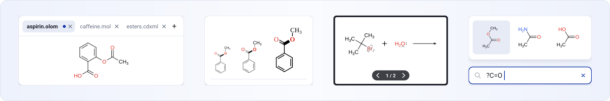
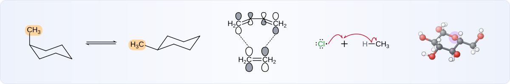
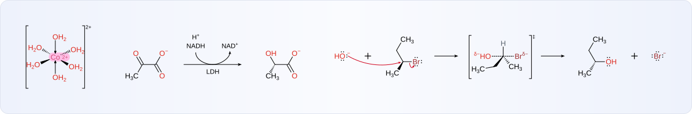
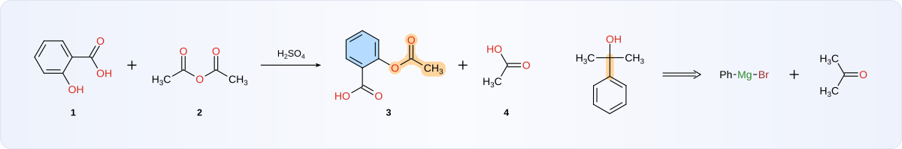
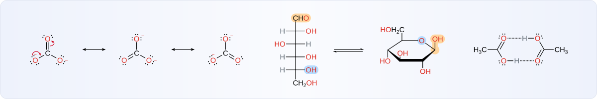

Co je nového v olomoluWhat's new in olomolWas ist neu in olomol
Změny v jednotlivých verzích, nejnovější nahoře.The changes in each version, newest on top.Änderungen der einzelnen Versionen, die neueste zuerst.
0.5.0 19 November 2026 nejnovějšínewestneueste

Práce se soubory jako v běžném editoru: vlastní formát .olom, karty, nedávné soubory, PDF, hledání ve spodní liště, promítání a nabídka pravého tlačítka. K tomu styly kresby pro časopisy (ACS, RSC i vlastní).
Nové
- Ukládání: Ctrl+S uloží kresbu zpět do jejího souboru bez ptaní (Chrome, Edge), Ctrl+Shift+S je Uložit jako. Kresby se ukládají ve vlastním formátu olomolu, .olom; soubory KET se dál otevírají i exportují (pro Ketcher se zkratkami jako jeho skupinami a stereochemií Haworthových a Fischerových projekcí jako klíny), ale soubory jiných programů se nepřepisují.
- Karty: víc kreseb najednou, každá se svým zpět a souborem; při příštím otevření jsou všechny zpět. Duplikovat kresbu (pravým tlačítkem na kartě) udělá kopii, třeba z úlohy pro její řešení. Kresba otevřená v jednom okně olomolu zůstane v něm, takže se dvě okna nikdy nepřepíšou.
- Otevírání: soubory jde přetáhnout do okna, Otevřít nabízí nedávné soubory a nainstalovaná aplikace otevírá soubory ze správce souborů.
- Hledání ve spodní liště (/): struktury podle názvu, SMILES nebo InChI, prvky, šablony i nástroje a akce olomolu.
- Export → PDF / Tisk…: kresba sama na stránce, jako vektorové PDF.
- Dřívější verze kresby: kliknutím na Uchováno v horní liště nebo z nabídky Otevřít.
- Promítání (tlačítko vpravo v horní liště): otevřené kresby přes celou obrazovku, bez lišt; → a ← (nebo prezentér) přecházejí mezi nimi, třeba z úlohy na řešení, Esc vrátí zpět.
- Pravé tlačítko na plátně: vyjmout, kopírovat, vložit, smazat, Překreslit, Otočit ve 3D, překlopit, vazbu vodorovně nebo svisle a další, podle toho, na co klikáte.
- Obrázky SVG a PNG exportované z olomolu nesou kresbu: otevřou se znovu jako kresba (Ctrl+O nebo přetažením).
- Odkazy se strukturou:
olomol.org/#smiles=CCO(nebo#name=caffeine) otevře strukturu nakreslenou, víc struktur ve vlastních kartách; odkaz jde vložit i do hledání. Chatboti se zllms.txtdozví, jak takové odkazy psát. - Styly: Nastavení → Styl nabízí vedle Obrazovky a ACS i RSC, Prezentace a Vlastní… (délka vazby, čáry, velikost a písmo popisků v bodech). Styl si kresba nese ve svém souboru; Použít pro nové kresby určí, v jakém stylu nové kresby začínají. Ke stylu patří i náboje v kroužcích (⊕ ⊖) a volné páry jako čárky.
- Tučná vazba a tučný popisek atomu (v panelu výběru) a vlastní písmo a velikost textu (Aa a pt v liště nad textem).
- Při tažení obdélníku je vidět, co se vybere, než ho pustíte.
- Trojklik vybere celý řádek reakčního schématu: jeho molekuly, + a šipky i s tím, co je na nich.
- Skupiny: Ctrl+G seskupí výběr, i skupiny do větší skupiny; Ctrl+kliknutí vybere skupinu (znovu: skupinu kolem ní), obyčejné kliknutí dál vybírá atomy a molekuly; Ctrl+Shift+G skupinu rozdělí. Totéž v panelu Objekty vlevo dole (seznam věcí a skupin kresby; skupiny se v něm dají pojmenovat a věci mezi nimi přetahovat) a v nabídce pravého tlačítka; zarovnání posouvá skupiny jako celky a SVG je nese jako skupiny.
- Karbokation bez napsaného C: Uhlíky → čára nakreslí nabitý uhlík jen jako + v rohu (u karbaniontu −), Všechny C jako C+.
- Tři nové ukázky v nápovědě, pod Soubory a karty: úloha a řešení v kartách, ukládání a dřívější verze, styl časopisu.
Změněno
- Tlačítka horní lišty jsou ve skupinách. V úzkém okně se to, co se nevejde, schová pod ⋯ na konci lišty.
- Nápověda nad spodní lištou má jeden řádek; vše, co nástroj umí, ukáže popisek jeho tlačítka.
- Se dvěma a více kresbami je název jen na kartách; dvojklik na kartu ji přejmenuje. Nové karty přibývají na konec.
- Držet pohromadě se jmenuje Jedna sloučenina (a Rozdělit Oddělit), aby se nepletlo se skupinami.
- Exportované obrázky PNG nesou své rozlišení, takže je Word a PowerPoint vloží ve velikosti podle stylu kresby, ne čtyřikrát větší; Kopírovat jako obrázek dává do schránky i SVG.
Working with files as in any editor: olomol’s own .olom format, tabs, recent files, PDF, a search bar at the bottom, a presentation mode and a right-click menu. And drawing styles for journals (ACS, RSC or your own).
Added
- Saving: Ctrl+S saves the drawing back into its file without asking (Chrome, Edge), Ctrl+Shift+S is Save as. Drawings are saved in olomol’s own format, .olom; KET files still open and export (for Ketcher, with abbreviations as its groups and the stereo of Haworth and Fischer projections as wedges), but other programs’ files are never written over.
- Tabs: several drawings at once, each with its own undo and file; all of them are back the next time you open olomol. Duplicate drawing (right-click a tab) makes a copy, say of an exercise for its solution. A drawing open in one olomol window stays in it, so two windows never write over each other.
- Opening: drop files onto the window, Open lists recent files, and the installed app opens files from the file manager.
- Search in the bottom bar (/): structures by name, SMILES or InChI, elements, templates, and olomol’s tools and actions.
- Export → PDF / Print…: the drawing alone on a page, as a vector PDF.
- Earlier versions of a drawing: click Autosaved in the top bar, or from the Open menu.
- Show (the button on the right of the top bar): the open drawings full screen, without the bars; → and ← (or a clicker) step through them, from an exercise to its solution, Esc goes back.
- Right-click on the canvas: cut, copy, paste, delete, Redraw, Turn in 3D, flips, a bond horizontal or vertical and more, depending on what you click.
- SVG and PNG pictures exported from olomol carry the drawing: they open again as the drawing (Ctrl+O or dropped on the window).
- Links with a structure:
olomol.org/#smiles=CCO(or#name=caffeine) opens it drawn, several in tabs of their own; a link can be pasted into the search bar too. Chatbots learn how to write them fromllms.txt. - Styles: Settings → Style has RSC, Slides and Custom… (bond length, lines, label size and font in points) beside Screen and ACS. A drawing keeps its style in its file; Use for new drawings sets the style new drawings start in. Circled charges (⊕ ⊖) and lone pairs as bars belong to the style too.
- Bold bonds and bold atom labels (in the selection’s panel), and a text’s own font and size (Aa and pt in the bar over the text).
- While a box is dragged, what it will select is lit before you let go.
- A triple click selects a whole row of a reaction scheme: its molecules, + signs and arrows with what is on them.
- Groups: Ctrl+G groups the selection, groups into larger groups too; Ctrl+click selects a group (again: the group round it), while a plain click still selects atoms and molecules; Ctrl+Shift+G takes a group apart. The same from the Objects panel at the bottom left (a list of the drawing’s things and groups, where groups can be named and things dragged between them) and the right-click menu; Align moves groups as wholes, and SVG pictures keep them as groups.
- A carbocation without its C written: Carbons → line draws a charged carbon as only the + at the corner (− for a carbanion), All C as C+.
- Three new examples in the help, under Files and tabs: an exercise and its solution in tabs, saving and earlier versions, a journal’s style.
Changed
- The top bar’s buttons are in groups. In a narrow window, what doesn’t fit goes under ⋯ at the end of the bar.
- The hint above the bottom bar is one line; a tool button’s tooltip says all the tool does.
- With two drawings or more, the name is on the tabs only; double-click a tab to rename it. New tabs go at the end.
- Keep together is now One compound (and Keep apart Separate), so as not to be taken for grouping.
- Exported PNG pictures carry their resolution, so Word and PowerPoint place them at the size the drawing’s style gives, not four times larger; Copy as picture also puts an SVG on the clipboard.
Arbeiten mit Dateien wie in jedem Editor: das eigene Format .olom, Tabs, zuletzt verwendete Dateien, PDF, eine Suchleiste unten, ein Vorführmodus und ein Rechtsklick-Menü. Dazu Zeichenstile für Zeitschriften (ACS, RSC oder ein eigener).
Neu
- Speichern: Strg+S speichert die Zeichnung ohne Nachfrage in ihre Datei (Chrome, Edge), Strg+Umschalt+S ist Speichern unter. Zeichnungen werden im eigenen Format von olomol gespeichert, .olom; KET-Dateien lassen sich weiter öffnen und exportieren (für Ketcher mit Abkürzungen als seinen Gruppen und der Stereochemie von Haworth- und Fischer-Projektionen als Keilen), aber Dateien anderer Programme werden nie überschrieben.
- Tabs: mehrere Zeichnungen gleichzeitig, jede mit eigenem Rückgängig und eigener Datei; beim nächsten Öffnen von olomol sind alle wieder da. Zeichnung duplizieren (Rechtsklick auf einen Tab) macht eine Kopie, etwa einer Aufgabe für ihre Lösung. Eine in einem olomol-Fenster geöffnete Zeichnung bleibt dort, sodass sich zwei Fenster nie überschreiben.
- Öffnen: Dateien aufs Fenster ziehen, Öffnen listet zuletzt verwendete Dateien, und die installierte App öffnet Dateien aus dem Dateimanager.
- Suche in der unteren Leiste (/): Strukturen nach Name, SMILES oder InChI, Elemente, Vorlagen sowie Werkzeuge und Aktionen von olomol.
- Export → PDF / Drucken…: nur die Zeichnung auf einer Seite, als Vektor-PDF.
- Frühere Versionen einer Zeichnung: Klick auf Gesichert in der oberen Leiste oder im Menü Öffnen.
- Vorführen (die Schaltfläche rechts in der oberen Leiste): die offenen Zeichnungen im Vollbild, ohne Leisten; → und ← (oder ein Presenter) blättern durch sie, von der Aufgabe zur Lösung, Esc führt zurück.
- Rechtsklick auf die Zeichenfläche: Ausschneiden, Kopieren, Einfügen, Löschen, Neu zeichnen, In 3D drehen, Spiegeln, eine Bindung waagrecht oder senkrecht und mehr, je nachdem, worauf Sie klicken.
- Aus olomol exportierte SVG- und PNG-Bilder tragen die Zeichnung in sich: Sie öffnen sich wieder als Zeichnung (Strg+O oder aufs Fenster gezogen).
- Links mit einer Struktur:
olomol.org/#smiles=CCO(oder#name=caffeine) öffnet sie gezeichnet, mehrere in eigenen Tabs; ein Link lässt sich auch in die Suche einfügen. Chatbots erfahren ausllms.txt, wie man solche Links schreibt. - Stile: Einstellungen → Stil bietet neben Bildschirm und ACS auch RSC, Folien und Eigener… (Bindungslänge, Linien, Größe und Schrift der Beschriftungen in Punkt). Eine Zeichnung behält ihren Stil in ihrer Datei; Für neue Zeichnungen verwenden legt fest, in welchem Stil neue Zeichnungen beginnen. Ladungen im Kreis (⊕ ⊖) und freie Paare als Striche gehören ebenfalls zum Stil.
- Fette Bindungen und fette Atombeschriftungen (im Panel der Auswahl) sowie eigene Schrift und Größe eines Textes (Aa und pt in der Leiste über dem Text).
- Beim Ziehen eines Rahmens ist zu sehen, was ausgewählt wird, bevor Sie loslassen.
- Ein Dreifachklick wählt eine ganze Zeile eines Reaktionsschemas: ihre Moleküle, Pluszeichen und Pfeile samt dem, was darauf steht.
- Gruppen: Strg+G gruppiert die Auswahl, auch Gruppen zu größeren; Strg+Klick wählt eine Gruppe (noch einmal: die Gruppe darum), ein einfacher Klick wählt weiter Atome und Moleküle; Strg+Umschalt+G löst eine Gruppe auf. Dasselbe im Panel Objekte unten links (eine Liste der Dinge und Gruppen der Zeichnung, in der sich Gruppen benennen und Dinge zwischen ihnen ziehen lassen) und im Rechtsklick-Menü; Ausrichten verschiebt Gruppen als Ganzes, und SVG-Bilder behalten sie als Gruppen.
- Ein Carbokation ohne geschriebenes C: C-Atome → Strich zeichnet ein geladenes C-Atom nur als + an der Ecke (− bei einem Carbanion), Alle C als C+.
- Drei neue Beispiele in der Hilfe, unter Dateien und Tabs: Aufgabe und Lösung in Tabs, Speichern und frühere Versionen, der Stil einer Zeitschrift.
Geändert
- Die Schaltflächen der oberen Leiste sind in Gruppen. In einem schmalen Fenster kommt, was nicht passt, unter ⋯ am Ende der Leiste.
- Der Hinweis über der unteren Leiste ist jetzt einzeilig; der Tooltip einer Werkzeugschaltfläche beschreibt alles, was das Werkzeug kann.
- Ab zwei Zeichnungen steht der Name nur auf den Tabs; ein Doppelklick auf einen Tab benennt ihn um. Neue Tabs kommen ans Ende.
- Zusammenhalten heißt jetzt Eine Verbindung (und Trennen bleibt Trennen), damit es nicht mit Gruppen verwechselt wird.
- Exportierte PNG-Bilder tragen ihre Auflösung, sodass Word und PowerPoint sie in der Größe einfügen, die der Stil der Zeichnung vorgibt, nicht viermal so groß; Als Bild kopieren legt auch ein SVG in die Zwischenablage.
0.4.5 19 November 2026
Soubory jiných programů: koordinační a vodíkové vazby, polymery s n, ručně zadané vodíky a formátování textů zůstanou. Export předem řekne, co formát neumí uložit.
Nové
- Nabídka Export u každého formátu řekne, co z kresby neumí uložit (zahnuté šipky, texty, závorky, barvy…), a zpráva po exportu to zopakuje.
Opraveno
- Reakce v souborech jiných programů (Molfile, RXN, SMILES) je vždy jen jedna a celá: molekula mimo linku šipky nechybí, rezonanční, dipólová, rovnítková a přeškrtnutá šipka nejsou reakce a schéma o víc krocích se uloží jako molekuly (Export to řekne).
- Reakční SMILES vložený do kresby si nechá stereochemii; SDF a RXN olomol zapisuje i čte sám (dusík se třemi nepárovými elektrony zůstane N).
- Popisky z ChemDraw s horním indexem (H⁺, NAD⁺) se při otevření neztratí; InChI kresby se symbolem R řekne, proč nejde, místo prázdného souboru.
- Molfile zachová koordinační a vodíkové vazby; při čtení už z nich nejsou obyčejné vazby (cisplatina s NH₂).
- Závorky s n (opakující se jednotka polymeru) z ChemDraw, Ketcheru a molfilů zůstanou a do molfilu, SDF i KET se zapíšou tak, aby je jiné programy znaly.
- Počet vodíků zadaný ručně se při čtení SDF, RXN a souborů z Ketcheru neztratí (karben CH₂ už není CH₄).
- Texty z ChemDraw a Ketcheru si nechají horní a dolní indexy, tučné písmo a kurzívu (m², cm⁻¹, t-BuOK).
- Samotný CH₄, NH₃ nebo H₂O z ChemDraw je atom, ne popisek; D, T a R# v molfilu V3000 se čtou jako ve V2000.
- Změna těsně před zavřením nebo obnovením stránky se uloží; když prohlížeč nic neukládá (anonymní okno), zeptá se před zavřením.
- Ctrl+V s obrázkem ve schránce řekne, že není co vložit, místo aby znovu vložil poslední kopii.
- Rozkreslit a Zkratkou nechají zahnuté šipky na zkratce a na její vazbě (odstupující OTs v SN2) a text u ní.
- Popisek, který by narazil do sousedního atomu, se napíše na druhou stranu: HO vedle nakresleného H, HOH₂C nad OH.
- Značky R/S se nepostaví na vazbu ani popisek a nevlezou do kruhu, kde by patřily k jinému atomu (glukosa v židličkové konformaci).
- Překreslit nechá nakreslenému vodíku stranu, kterou měl, i když jeho uhlík není stereocentrum (axiální H v židličce, anti k Br při E2): klínek nebo čárkovanou vazbu.
- Dvě rybářské šipky z jedné vazby (homolýza) jsou zrcadlový pár, na volné straně vazby.
Other programs' files: dative and hydrogen bonds, polymers with n, hydrogens set by hand and text formatting are kept. Export says beforehand what a format can't hold.
New
- The Export menu says under each format what of the drawing it can't hold (curved arrows, texts, brackets, colours…), and the message after the export says it again.
Fixed
- Other programs' files (Molfile, RXN, SMILES) hold one whole reaction: a molecule off the arrow's line is kept, resonance, dipole, equals and crossed arrows are no reaction, and a scheme of several steps is written as its molecules (Export says so).
- A reaction SMILES pasted keeps its stereo; olomol writes and reads SDF and RXN itself (a nitrogen with three unpaired electrons stays N).
- ChemDraw captions with a superscript (H⁺, NAD⁺) are no longer lost when opened; InChI of a drawing with an R says why it can't be made, instead of an empty file.
- Molfiles keep dative and hydrogen bonds; read back, they are no longer ordinary bonds (cisplatin with NH₂).
- Brackets with n (a polymer's repeating unit) from ChemDraw, Ketcher and molfiles are kept, and written to molfiles, SDF and KET so that other programs know them.
- Hydrogens set by hand are no longer lost when reading SDF, RXN and Ketcher's files (a carbene CH₂ stays CH₂).
- Texts from ChemDraw and Ketcher keep their sub- and superscripts, bold and italic (m², cm⁻¹, t-BuOK).
- A lone CH₄, NH₃ or H₂O from ChemDraw is an atom, not a label; D, T and R# in a V3000 molfile are read as in V2000.
- A change made just before the page is closed or reloaded is kept; where the browser keeps nothing (a private window), it asks before closing.
- Ctrl+V with a picture on the clipboard says there is nothing to paste, instead of pasting the last copy again.
- Draw out and Abbreviate keep curved arrows on a label and on its bond (OTs leaving in an SN2) and the text on it.
- A label that would run into a nearby atom is written the other way round: HO beside a drawn H, HOH₂C above an OH.
- R/S marks stay off bonds and labels, and out of a ring where they would read as another atom's (glucose as a chair).
- Redraw keeps the side of a drawn H even where its carbon is no stereocentre (a chair's axial H, anti to the Br in an E2): a wedge or a hashed wedge.
- The two fishhooks out of one bond (homolysis) are a mirror pair, on the open side of the bond.
Dateien anderer Programme: dative und Wasserstoffbrücken, Polymere mit n, von Hand gesetzte Wasserstoffe und Textformatierung bleiben erhalten. Der Export sagt vorher, was ein Format nicht aufnehmen kann.
Neu
- Das Menü Export nennt unter jedem Format, was es von der Zeichnung nicht aufnehmen kann (gebogene Pfeile, Texte, Klammern, Farben…), und die Meldung nach dem Export wiederholt es.
Behoben
- Dateien anderer Programme (Molfile, RXN, SMILES) enthalten eine ganze Reaktion: Ein Molekül neben der Pfeillinie bleibt erhalten, Resonanz-, Dipol-, Gleichheits- und durchgestrichene Pfeile sind keine Reaktion, und ein Schema aus mehreren Schritten wird als seine Moleküle geschrieben (Export sagt es).
- Ein eingefügtes Reaktions-SMILES behält seine Stereochemie; SDF und RXN schreibt und liest olomol selbst (ein Stickstoff mit drei ungepaarten Elektronen bleibt N).
- ChemDraw-Beschriftungen mit Hochstellung (H⁺, NAD⁺) gehen beim Öffnen nicht mehr verloren; das InChI einer Zeichnung mit einem R sagt, warum es nicht geht, statt einer leeren Datei.
- Molfiles behalten dative Bindungen und Wasserstoffbrücken: Beim erneuten Einlesen werden daraus keine gewöhnlichen Bindungen mehr (Cisplatin mit NH₂).
- Klammern mit n (die Wiederholungseinheit eines Polymers) aus ChemDraw, Ketcher und Molfiles bleiben erhalten und werden so in Molfiles, SDF und KET geschrieben, dass andere Programme sie kennen.
- Von Hand gesetzte Wasserstoffe gehen beim Lesen von SDF, RXN und Ketcher-Dateien nicht mehr verloren (ein Carben CH₂ bleibt CH₂).
- Texte aus ChemDraw und Ketcher behalten Hoch- und Tiefstellung, Fett- und Kursivschrift (m², cm⁻¹, t-BuOK).
- Ein einzelnes CH₄, NH₃ oder H₂O aus ChemDraw ist ein Atom, keine Beschriftung; D, T und R# in einem V3000-Molfile werden wie in V2000 gelesen.
- Eine Änderung kurz vor dem Schließen oder Neuladen der Seite bleibt erhalten; wo der Browser nichts speichert (ein privates Fenster), fragt er vor dem Schließen.
- Strg+V mit einem Bild in der Zwischenablage sagt, dass es nichts einzufügen gibt, statt die letzte Kopie noch einmal einzufügen.
- Ausschreiben und Abkürzen behalten gebogene Pfeile an einer Abkürzung und an ihrer Bindung (abgehendes OTs in einer SN2) und den Text daran.
- Eine Beschriftung, die ein benachbartes Atom verdecken würde, wird umgekehrt geschrieben: HO neben einem gezeichneten H, HOH₂C über einem OH.
- R/S-Angaben stehen nicht auf Bindungen oder Beschriftungen und nicht im Ring, wo sie zu einem anderen Atom zu gehören scheinen (Glucose in Sesselkonformation).
- Neu zeichnen behält die Seite eines gezeichneten H, auch wenn sein Kohlenstoff kein Stereozentrum ist (das axiale H im Sessel, anti zum Br bei der E2): ein Keil oder ein gestrichelter Keil.
- Die zwei Fischhaken aus einer Bindung (Homolyse) sind ein Spiegelpaar, auf der freien Seite der Bindung.
0.4.4 14 November 2026
Náhled vkládané šipky nebo + na správném místě, zahnuté šipky mimo čáry trojných vazeb, a jedna věc z různých míst dělá totéž: tlačítka, klávesy a panel, zarovnání se závorkami, otáčení závorek a textů.
Opraveno
- Průhledný náhled vkládané samotné šipky nebo znaménka + stojí tam, kam je klik položí, ne kus vlevo.
- Zahnuté šipky se vyhýbají i krajním čarám dvojných a trojných vazeb, hrot šipky k atomu také (ležel na čáře trojné vazby).
- Zarovnat reakční schéma nechá závorky s rezonančními strukturami pohromadě a srovná i reakci uvnitř nich (i když je vybraná jen závorka): rezonanční šipka už neskončí před závorkou a za první molekulou nezůstane velká mezera.
- Tlačítko závorek v levém panelu (i klávesa K) dá závorky kolem vybraných molekul, stejně jako tlačítko Závorky v panelu výběru.
- Zapnuté δ− nebo δ+ v panelu výběru se dalším kliknutím vypne, jako u nástroje δ (dřív šlo δ odstranit jen přes náboj).
- Přetažení atomu na jiný atom už nevyprázdní stránku, když na jeho vazbě začíná zahnutá šipka; šipky, orbitaly a závorky přejdou na atom, na který dopadl.
- Export, kopie obrázku a tisk jen výběru fungují i se zahnutou šipkou vybranou bez jejích molekul.
- Skrýt nakreslené H nechá H, z jehož vazby vede zahnutá šipka (E2).
- Rozkreslit a Zkratkou nechají molekule její místo na reakční šipce, číslo pod ní a závorky.
- Dvojklik na jednu z rezonančních struktur v závorce už nevybere i závorku kolem obou; laso vybírá závorky jako obdélník.
- Zarovnat funguje i pro věci uvnitř závorky, a závorka v závorce se zarovná, ať byla nakreslená dřív nebo později.
- Zarovnat reakční schéma nechá + mezi molekulami spojenými zahnutou šipkou (HO⁻ + CH₃Br v SN2).
- Uhlíky → čára skryje i CH₃ na koncích, když je v Nastavení zapnuté Všechny C.
- Kliknutá vazba a klávesa 1 dá klín, jako vazba pod ukazatelem; 1, 2, 3 udělají z vodíkové, koordinační nebo částečné vazby obyčejnou.
- Tlačítka náboje, nepárového elektronu a vazeb v levém panelu, prvky ve spodní liště, klávesy prvků a tečka působí na vybranou část molekuly, jako jejich klávesy a panel.
- Náboj z nástroje nebo klávesou smaže staré δ (vracelo se) a jde až do ±8 jako v panelu; δ na nabitém atomu náboj nahradí.
- Del s ukazatelem na boční šipce smaže tu šipku, ne celou reakční šipku; vybraná boční šipka zůstane vybraná.
- Šipky na klávesnici posunou číslo sloučeniny nebo činidlo z jeho místa, jako tažení (dřív se nic nepohnulo).
- V panelu: Volné páry se rozsvítí i pro celou molekulu, aromatická vazba nemá řád ani posun 2. čáry, klín na čárkované vazbě udělá obyčejný klín, tučný text jde v poli upravit, zadaná délka šipky s boční šipkou platí, Jinak projde všechny možnosti.
- Závorky nakreslené obdélníkem zůstanou při otočení, překlopení přes vazbu, srovnání vazby vodorovně nebo svisle a Překreslit rovně kolem obsahu; texty se otáčí kolem středu a převrácení je nechá, kde jsou.
- Převrácená Fischerova nebo Haworthova projekce řekne, že je zrcadlovým obrazem, a HO psané vlevo je pak OH vpravo.
- Zkopírovaná závorka kolem molekuly obsahuje i atomy přikreslené později; vazba Newmanovy projekce viděná zepředu zůstane jednoduchá i z nástroje vazby.
- Náboj uprostřed kruhu je v kroužku, když jsou náboje v kroužcích; Zobrazit vše počítá se zahnutými šipkami.
The preview of a pasted arrow or + in the right place, curved arrows off triple bonds' lines, and one thing done from different places does the same: buttons, keys and the panel, aligning with brackets, turning brackets and texts.
Fixed
- The see-through preview of a lone arrow or + being pasted stands where the click puts it, not off to the left.
- Curved arrows keep clear of the outer lines of double and triple bonds too, and so does a head pointing at an atom (it lay on a triple bond's line).
- Align reaction scheme keeps brackets round resonance forms together and lines up the reaction inside them, also with only the bracket selected: the resonance arrow no longer ends up in front of the bracket, and no wide gap is left after the first molecule.
- The brackets button on the left (and the K key) puts brackets round the selected molecules, as the selection panel's Brackets does.
- Clicking the δ− or δ+ that is on in the selection panel takes it off, as with the δ tool (before, a δ could only be removed by way of the charge).
- Dropping an atom onto another no longer empties the page when a curved arrow starts on one of its bonds; arrows, orbitals and brackets go over to the atom it joins.
- Exporting, copying as a picture and printing only the selection work with a curved arrow selected without its molecules.
- Hide drawn H keeps an H whose bond a curved arrow starts from (an E2).
- Draw out and Abbreviate keep a molecule's place on a reaction arrow, the number under it and its brackets.
- A double click on one resonance form in a bracket no longer selects the bracket round both; the lasso selects brackets as a box does.
- Align works on things inside a bracket, and a bracket in a bracket aligns whichever was drawn first.
- Align reaction scheme keeps a + between molecules joined by a curved arrow (HO⁻ + CH₃Br in an SN2).
- Carbons → line takes the CH₃ off the chain ends too when Settings has All C.
- A clicked bond takes 1 to a wedge, as a bond under the pointer does; 1, 2, 3 make a hydrogen, dative or partial bond a plain one.
- The charge, unpaired electron and bond buttons on the left, the elements in the bottom bar, the element keys and . act on the selected part of a molecule, as their keys and the panel do.
- A charge from the tool or a key takes an old δ off (it came back) and goes up to ±8 as in the panel; a δ on a charged atom replaces the charge.
- Del with the pointer on a side arc deletes that arc, not the whole reaction arrow; a selected side arc stays selected.
- The arrow keys move a compound number or a reagent off its place, as a drag does (nothing moved before).
- In the panel: Lone pairs lights up for a whole molecule, an aromatic bond shows no order and no 2nd line to move, a wedge on a dashed bond makes a plain wedge, a bold text can be edited in its field, a typed length of an arrow with a side arc stays, Other way goes round all the ways.
- Brackets drawn as a box stay upright round what is in them when it is turned, turned over a bond, made horizontal or vertical, or redrawn; texts turn about their middle, and Flip leaves them where they are.
- A flipped Fischer or Haworth projection says it is the mirror image, and an HO written on the left becomes OH on the right.
- A copied bracket made round a molecule includes the atoms drawn on later; a Newman projection's bond seen end on stays single with the bond tool too.
- A charge in a ring's middle is circled when charges are; Fit counts curved arrows in.
Die Vorschau eines eingefügten Pfeils oder Pluszeichens an der richtigen Stelle, gebogene Pfeile nicht mehr auf den Strichen von Dreifachbindungen, und dieselbe Sache von verschiedenen Stellen aus wirkt gleich: Schaltflächen, Tasten und Panel, Ausrichten mit Klammern, Drehen von Klammern und Texten.
Behoben
- Die durchscheinende Vorschau eines eingefügten einzelnen Pfeils oder Pluszeichens steht dort, wo der Klick ihn ablegt, nicht ein Stück links davon.
- Gebogene Pfeile weichen auch den äußeren Strichen von Doppel- und Dreifachbindungen aus, ebenso eine Pfeilspitze an einem Atom (sie lag auf einem Strich der Dreifachbindung).
- Reaktionsschema ausrichten hält Klammern um Resonanzstrukturen zusammen und richtet auch die Reaktion darin aus, selbst wenn nur die Klammer ausgewählt ist: Der Resonanzpfeil landet nicht mehr vor der Klammer, und hinter dem ersten Molekül bleibt keine große Lücke.
- Die Klammer-Schaltfläche links (und die Taste K) setzt Klammern um die ausgewählten Moleküle, wie Klammern im Auswahl-Panel.
- Ein Klick auf das eingeschaltete δ− oder δ+ im Auswahl-Panel entfernt es wieder, wie beim δ-Werkzeug (bisher ging das nur über die Ladung).
- Zieht man ein Atom auf ein anderes, wird die Seite nicht mehr leer, wenn an einer seiner Bindungen ein gebogener Pfeil beginnt; Pfeile, Orbitale und Klammern gehen auf das Atom über, mit dem es sich verbindet.
- Export, Kopieren als Bild und Drucken nur der Auswahl funktionieren auch mit einem gebogenen Pfeil, der ohne seine Moleküle ausgewählt ist.
- Gezeichnete H ausblenden lässt ein H stehen, von dessen Bindung ein gebogener Pfeil ausgeht (E2).
- Ausschreiben und Abkürzen lassen einem Molekül seinen Platz am Reaktionspfeil, die Nummer darunter und seine Klammern.
- Ein Doppelklick auf eine Resonanzstruktur in einer Klammer wählt nicht mehr die Klammer um beide; das Lasso wählt Klammern wie ein Rahmen.
- Ausrichten funktioniert auch für Dinge in einer Klammer, und eine Klammer in einer Klammer richtet sich aus, gleich welche zuerst gezeichnet wurde.
- Reaktionsschema ausrichten lässt ein + zwischen Molekülen, die ein gebogener Pfeil verbindet (HO⁻ + CH₃Br in einer SN2).
- C-Atome → Strich nimmt auch das CH₃ an den Kettenenden weg, wenn in den Einstellungen Alle C gilt.
- Eine angeklickte Bindung wird mit 1 zum Keil, wie eine Bindung unter dem Zeiger; 1, 2, 3 machen aus einer Wasserstoff-, Koordinations- oder Partialbindung eine gewöhnliche.
- Die Schaltflächen für Ladung, ungepaartes Elektron und Bindungen links, die Elemente in der unteren Leiste, die Elementtasten und . wirken auf den ausgewählten Teil eines Moleküls, wie ihre Tasten und das Panel.
- Eine Ladung aus dem Werkzeug oder per Taste nimmt ein altes δ weg (es kam zurück) und geht bis ±8 wie im Panel; ein δ auf einem geladenen Atom ersetzt die Ladung.
- Entf mit dem Zeiger auf einem Seitenbogen löscht diesen Bogen, nicht den ganzen Reaktionspfeil; ein ausgewählter Seitenbogen bleibt ausgewählt.
- Die Pfeiltasten schieben eine Verbindungsnummer oder ein Reagenz von seinem Platz, wie Ziehen (vorher bewegte sich nichts).
- Im Panel: Freie Paare leuchtet auch für ein ganzes Molekül, eine aromatische Bindung zeigt keine Ordnung und keinen zweiten Strich zum Verschieben, ein Keil auf einer gestrichelten Bindung ergibt einen gewöhnlichen Keil, ein fetter Text lässt sich im Feld bearbeiten, die eingegebene Länge eines Pfeils mit Seitenbogen bleibt, Andere Variante geht alle Möglichkeiten durch.
- Als Rahmen gezeichnete Klammern bleiben beim Drehen, Umklappen über eine Bindung, Waagrecht- oder Senkrechtstellen einer Bindung und Neu zeichnen gerade um ihren Inhalt; Texte drehen sich um ihre Mitte, und Spiegeln lässt sie, wo sie sind.
- Eine gespiegelte Fischer- oder Haworth-Projektion sagt, dass sie das Spiegelbild ist, und ein links geschriebenes HO wird rechts zu OH.
- Eine kopierte Klammer um ein Molekül umfasst auch später angezeichnete Atome; die von vorn gesehene Bindung einer Newman-Projektion bleibt auch mit dem Bindungswerkzeug einfach.
- Eine Ladung in der Mitte eines Rings steht im Kreis, wenn Ladungen das tun; Alles zeigen bezieht gebogene Pfeile ein.
0.4.3 13 November 2026
Spolehlivé R/S židliček a Haworthových projekcí, klávesy pro celý výběr, zkratky pro části výběru a stránka o olomolu s častými otázkami.
Změněno
- S výběrem mění + a − náboj všech jeho atomů a 1 2 3 řád všech jeho vazeb.
- Zkratkou zkrátí i skupiny uvnitř výběru, který jako celek zkratku nemá (CH2N(CH3)2 → CH2NMe2), i samotnou vybranou skupinu CH3 na Me; Rozkreslit a Zkratkou zachovají barvu a zvýraznění.
- Činidla a podmínky u otočené nebo svislé šipky stojí pod sebou, těsně u šipky, jako u vodorovné.
- Stránka o olomolu odpovídá na časté otázky a má vlastní stránku v každém jazyce, stejně jako Co je nového. olomol se cituje jedním DOI pro všechny verze.
Opraveno
- Židličky: uhlík kruhu se dvěma skupinami na hrotu židličky a axiální skupina s nakresleným vodíkem se četly s opačným R/S (cis a trans prohozené), i ve SMILES, InChI a v souborech.
- Haworthovy projekce, kde má uhlík nakreslené obě skupiny (OH i H), se četly bez R/S, a nakreslené nakřivo i s nesprávným. Teď se prostřední uhlíky kruhu čtou a žádný uhlík špatně.
- Překlopení židličky funguje i na plochém kruhu s klínem na vazbě v kruhu (tramadol) a na hrotu s uhlíkem se dvěma skupinami.
- Zarovnat reakční schéma nechá molekulu v řadě, i když z ní vede zahnutá šipka k činidlu na šipce.
- Znaménko + nebo − před činidlem na šipce stojí v jeho výšce a před jeho počtem.
- : s výběrem ukáže jeho volné páry, jak slibuje popisek tlačítka.
- Popisky u ukázkových kreseb stojí u ukazatele.
- Samotný radikálový atom ze SMILES (
[Cl]) má svůj nepárový elektron. - Zobrazit vše ukáže kresbu i s dlouhou poznámkou o více řádcích, místo aby ji oddálilo do nečitelna.
- Text na šipce nebo pod molekulou se po dvojkliku upravuje tam, kde je nakreslený, ne kus vedle; lišta nad textem nezajede pod panel vpravo.
Reliable R/S for chairs and Haworth projections, keys for a whole selection, abbreviations for parts of a selection, and an about page with common questions.
Changed
- With a selection, + and − change the charge of all its atoms, 1 2 3 the order of all its bonds.
- Abbreviate also shortens groups inside a selection that has no abbreviation as a whole (CH2N(CH3)2 → CH2NMe2), and a CH3 selected on its own to Me; Draw out and Abbreviate keep colour and highlight.
- Reagents and conditions beside a turned or upright arrow stand one under the other, close to the arrow, as on a horizontal one.
- The about page answers common questions and, like What’s new, has a page in each language. olomol is cited by one DOI for all versions.
Fixed
- Chairs: a ring carbon with two groups on a tip of the chair, and an axial group with its H drawn, were read with the wrong R/S (cis and trans swapped), in SMILES, InChI and files too.
- Haworth projections with both groups of a carbon drawn (OH and H) were read without R/S, and drawn a little askew with the wrong one. Now the ring’s middle carbons are read, and none wrongly.
- Ring flip works on a flat ring with a wedge on a ring bond (tramadol), and with a carbon with two groups on a tip.
- Align reaction scheme keeps a molecule in the row when a curved arrow goes from it to a reagent on an arrow.
- The + or − in front of a reagent on an arrow stands level with it and in front of its count.
- : with a selection shows its lone pairs, as the button’s tooltip says.
- The tips on the example drawings stand beside the pointer.
- A lone radical atom from a SMILES (
[Cl]) has its unpaired electron. - Fit everything shows a drawing with a long note of several lines, instead of zooming out until nothing can be read.
- A text on an arrow or under a molecule, double-clicked, is edited where it is drawn, not a little to the side; the text tools over it no longer run under the panel on the right.
Verlässliches R/S für Sessel und Haworth-Projektionen, Tasten für die ganze Auswahl, Kürzel für Teile einer Auswahl und eine Seite über olomol mit häufigen Fragen.
Geändert
- Mit einer Auswahl ändern + und − die Ladung aller ihrer Atome, 1 2 3 die Ordnung aller ihrer Bindungen.
- Abkürzen kürzt auch Gruppen innerhalb einer Auswahl, die als Ganzes kein Kürzel hat (CH2N(CH3)2 → CH2NMe2), und eine allein ausgewählte CH3-Gruppe zu Me; Ausschreiben und Abkürzen behalten Farbe und Hervorhebung.
- Reagenzien und Bedingungen an einem gedrehten oder senkrechten Pfeil stehen untereinander, dicht am Pfeil, wie an einem waagerechten.
- Die Seite über olomol beantwortet häufige Fragen und hat wie Was ist neu eine Seite in jeder Sprache. olomol wird mit einer DOI für alle Versionen zitiert.
Behoben
- Sessel: Ein Ringkohlenstoff mit zwei Gruppen an einer Spitze des Sessels und eine axiale Gruppe mit gezeichnetem H wurden mit dem falschen R/S gelesen (cis und trans vertauscht), auch in SMILES, InChI und Dateien.
- Haworth-Projektionen, in denen an einem Kohlenstoff beide Gruppen gezeichnet sind (OH und H), wurden ohne R/S gelesen, leicht schief gezeichnet sogar mit dem falschen. Jetzt werden die mittleren Kohlenstoffe des Rings gelesen und keiner falsch.
- Ringinversion funktioniert auch an einem flachen Ring mit Keil an einer Ringbindung (Tramadol) und mit einem Kohlenstoff mit zwei Gruppen an einer Spitze.
- Reaktionsschema ausrichten lässt ein Molekül in der Reihe, auch wenn ein gebogener Pfeil von ihm zu einem Reagenz auf einem Pfeil führt.
- Das + oder − vor einem Reagenz auf einem Pfeil steht auf seiner Höhe und vor seinem Koeffizienten.
- : mit einer Auswahl zeigt ihre freien Elektronenpaare, wie der Tooltip der Schaltfläche verspricht.
- Die Hinweise zu den Beispielzeichnungen stehen neben dem Zeiger.
- Ein einzelnes Radikalatom aus einem SMILES (
[Cl]) hat sein ungepaartes Elektron. - Alles zeigen zeigt eine Zeichnung mit einer langen, mehrzeiligen Notiz, statt so weit herauszuzoomen, dass nichts mehr lesbar ist.
- Ein Text auf einem Pfeil oder unter einem Molekül wird nach einem Doppelklick dort bearbeitet, wo er steht, nicht ein Stück daneben; die Textleiste darüber verschwindet nicht mehr unter dem Panel rechts.
0.4.2 10 November 2026
Citace s DOI v okně O aplikaci, správné načítání souborů z ChemDraw a reakcí z RXN, nová adresa pro problémy a nápady a úplné licence knihoven.
Přidáno
- Jak citovat v okně O aplikaci olomol: citace verze, kterou používáte, s jejím DOI na Zenodu, ke zkopírování jako text, BibTeX, RIS nebo CSL JSON nebo ke stažení jako soubor .bib, .ris nebo .json pro správce citací.
Opraveno
- Soubory z ChemDraw (CDXML, CDX) se otevřou všechny, i ty se stereochemií, která nesedí. Zkratky (OMe, OTBS, Et) zůstanou zkratkami (i v souborech z Ketcheru), popisky, kterým nerozuměl ani ChemDraw, zůstanou, jak jsou napsané (SiR3), atom s popiskem má tolik vodíků, kolik říká popisek (samotné C zůstane C), a místo připojení (vlnovka přes konec vazby) se stane R.
- Reakce ze souborů RXN a z reakčních SMILES: plus a šipka už nezasahují do popisků, činidla se postaví na šipku a šipka je jen tak dlouhá, jak potřebují.
- Skupiny R (R1), seznamy atomů ([C,N]) a dvojné vazby s neurčenou E/Z (i v KET z Ketcheru) se načtou jako takové, už ne jako uhlíky.
- Export přes Indigo (CDXML, RXN, SDF): texty zůstanou zachované a kresba s obecným popiskem nebo s klíny, které si odporují, se už vyexportuje.
Změněno
- Problémy a nápady posílejte nově na bugs@olomol.org; tuto adresu teď používá e-mail z tlačítka s broukem, okno O aplikaci i příručky.
- Licence všech knihoven, na kterých olomol stojí, jsou úplné, i těch zabudovaných v RDKitu a Indigu (InChI, FreeType, zlib a další). Okno O aplikaci na ně odkazuje.
- Okno O aplikaci olomol je kratší a přehlednější, po částech; klávesy a myš popisuje okno Klávesové zkratky, na které odkazuje.
A citation with its DOI in the About window, files from ChemDraw and reactions from RXN files read properly, a new address for problems and ideas, and the libraries’ licences complete.
Added
- How to cite in the About olomol window: the citation of the version you use, with its DOI on Zenodo, to copy as text, BibTeX, RIS or CSL JSON or to download as a .bib, .ris or .json file for a reference manager.
Fixed
- Files from ChemDraw (CDXML, CDX) all open, also those whose stereochemistry doesn’t add up. Abbreviations (OMe, OTBS, Et) stay abbreviations (in Ketcher’s files too), labels ChemDraw itself couldn’t read stay as written (SiR3), an atom with a label has the hydrogens its label says (a lone C stays C), and ChemDraw’s attachment point (the squiggle across a bond’s end) becomes an R.
- Reactions from RXN files and reaction SMILES: the plus and the arrow no longer run into labels, the reagents go onto the arrow, and the arrow is only as long as they need.
- R groups (R1), atom lists ([C,N]) and double bonds with their E/Z left open (in KET from Ketcher too) are read as such, no longer as carbons.
- Export through Indigo (CDXML, RXN, SDF): texts are kept, and a drawing with a group label or with wedges that contradict each other now exports.
Changed
- Problems and ideas now go to bugs@olomol.org: the bug button’s e-mail, the About window and the manuals all use it.
- The licences of every library olomol is built on are complete, including those built into RDKit and Indigo (InChI, FreeType, zlib and others). The About window links to them.
- The About olomol window is shorter and easier to read, in parts; the keys and the mouse are in the Keyboard shortcuts window, which it links to.
Ein Zitat mit DOI im Fenster „Über olomol“, richtig gelesene Dateien aus ChemDraw und Reaktionen aus RXN-Dateien, eine neue Adresse für Probleme und Ideen und vollständige Lizenzen der Bibliotheken.
Neu
- Zitieren im Fenster Über olomol: das Zitat der verwendeten Version mit ihrer DOI auf Zenodo, zum Kopieren als Text, BibTeX, RIS oder CSL JSON oder zum Herunterladen als .bib-, .ris- oder .json-Datei für ein Literaturverwaltungsprogramm.
Behoben
- Dateien aus ChemDraw (CDXML, CDX) öffnen sich alle, auch solche mit widersprüchlicher Stereochemie. Kürzel (OMe, OTBS, Et) bleiben Kürzel (auch in Dateien aus Ketcher), Beschriftungen, die schon ChemDraw nicht deuten konnte, bleiben, wie sie geschrieben sind (SiR3), ein beschriftetes Atom hat so viele Wasserstoffe, wie die Beschriftung angibt (ein einzelnes C bleibt C), und ChemDraws Verknüpfungspunkt (die Wellenlinie quer über dem Bindungsende) wird zu R.
- Reaktionen aus RXN-Dateien und Reaktions-SMILES: Plus und Pfeil stoßen nicht mehr an Beschriftungen, die Reagenzien stehen auf dem Pfeil, und der Pfeil ist nur so lang wie nötig.
- R-Gruppen (R1), Atomlisten ([C,N]) und Doppelbindungen mit offener E/Z (auch in KET aus Ketcher) werden als solche gelesen, nicht mehr als Kohlenstoffe.
- Export über Indigo (CDXML, RXN, SDF): Texte bleiben erhalten, und Zeichnungen mit einer allgemeinen Beschriftung oder mit Keilen, die sich widersprechen, lassen sich jetzt exportieren.
Geändert
- Probleme und Ideen bitte jetzt an bugs@olomol.org: Diese Adresse verwenden die E-Mail der Käfer-Schaltfläche, das Fenster Über olomol und die Handbücher.
- Die Lizenzen aller Bibliotheken, auf denen olomol aufbaut, sind vollständig, auch die der in RDKit und Indigo eingebauten (InChI, FreeType, zlib und weitere). Das Fenster Über olomol verlinkt sie.
- Das Fenster Über olomol ist kürzer und übersichtlicher gegliedert; Tasten und Maus erklärt das Fenster Tastenkürzel, auf das es verweist.
0.4.1 9 November 2026
Opravy po vydání 0.4.0, šablony v seznamu, nabité skupiny jako zkratky, barva i pro opačnou fázi orbitalů a licence MIT.
Opraveno
- Překreslit: molekula s dvojnou vazbou, jejíž E nebo Z kresba nechává otevřené (substituent v ose dvojné vazby, třeba když skupinu odtáhnete daleko), nedostala žádný nákres a okno tvrdilo, že všechny metody daly současný nákres. Nákresy teď konfiguraci nechají otevřenou vlnovkou vedle dvojné vazby, jako má vložený SMILES. Když by každý nákres molekulu změnil, okno to řekne.
- Čárkovaná čára překryvu k orbitalu s (vodík při hyperkonjugaci) se ho dotkne na straně, kde je druhý orbital; dřív vždy začínala vpravo od atomu, i když vedla doleva.
- Čárkovaná čára překryvu zůstane mezi laloky, mezi kterými jste ji natáhli, třeba od vazby C–H k dolnímu laloku orbitalu p; dřív vždy spojila dva laloky, které byly nejblíž u sebe.
- Rozkreslit: skupina jako CHO, OMe nebo Et leží v mřížce po 30°; dřív byla vazba C=O aldehydu o 2° nakřivo.
Změněno
- Licence: olomol je pod licencí MIT, smí se používat, šířit i upravovat. Okno O aplikaci odkazuje na její text.
- Orbitaly: i lalok opačné fáze může mít barvu. Nástroj barvy obarví lalok, na který kliknete; v panelu přepínač nad barvami, stínovaný nebo opačná fáze, určí, který lalok barvy obarví.
- Šablony: skupiny jsou v seznamu vlevo, nad nimi hledání, a velké skupiny se dělí na podskupiny (kruhy: aromatické, heteroaromatické…). Konformace a projekce jsou jedna skupina, rozdělená podle toho, jak se kreslí: židličky a vaničky, Newmanovy, Haworthovy a Fischerovy projekce. Adamantan je nakreslený naplocho a u adamantanové klece je zadní vazba přerušená tam, kde ji kříží vazba vpředu.
- Nabité skupiny jako zkratky: SO3−, CO2− (COO−), OPO32−, OPO3H− a PO32− znamenají sulfonát, karboxylát nebo fosfát s nábojem tam, kde patří. Zkratkou zapíše vybraný sulfonát nebo karboxylát jako zkratku a Rozkreslit ho vrátí.
Fixes after the 0.4.0 release, Templates in a list, charged groups as abbreviations, a colour for an orbital's other phase, and the MIT License.
Fixed
- Redraw: a molecule with a double bond whose E or Z the drawing leaves open (a substituent in line with the double bond, as when a group is dragged far off) got no drawings, and the window said every engine gave the current drawing. The drawings now keep it open with a wavy bond beside the double bond, as a pasted SMILES has. When every drawing would change the molecule, the window says so.
- A dashed overlap line to an s orbital (a hydrogen in hyperconjugation) meets it on the side facing the other orbital; before, it always started on the right of the atom, even when it ran to the left.
- A dashed overlap line stays between the lobes you dragged it between, say from a C–H bond to the lower lobe of a p orbital; before, it always joined the two lobes nearest each other.
- Draw out: a group like CHO, OMe or Et lies on the 30° grid; before, an aldehyde's C=O was 2° askew.
Changed
- Licence: olomol is under the MIT License, to use, share and change. The About window links to its text.
- Orbitals: the lobe of the other phase can have a colour too. The paint tool colours the lobe you click; in the panel, a toggle above the colours, shaded or other phase, chooses which lobe they paint.
- Templates: the groups are a list on the left with the search above it, and the large ones are split into subgroups (rings: aromatic, heteroaromatic…). Conformations and projections are one group, by how they are drawn: chairs and boats, Newman, Haworth and Fischer projections. Adamantane is drawn flat, and the adamantane cage has its bond behind broken where a bond in front crosses it.
- Charged groups as abbreviations: SO3−, CO2− (COO−), OPO32−, OPO3H− and PO32− stand for a sulfonate, carboxylate or phosphate with the charge where it belongs. Abbreviate writes a selected sulfonate or carboxylate as one, and Draw out brings it back.
Korrekturen nach dem Release 0.4.0, Vorlagen in einer Liste, geladene Gruppen als Kürzel, eine Farbe auch für die andere Phase eines Orbitals und die MIT-Lizenz.
Behoben
- Neu zeichnen: Ein Molekül mit einer Doppelbindung, deren E oder Z die Zeichnung offenlässt (ein Substituent in der Achse der Doppelbindung, etwa wenn eine Gruppe weit weggezogen wurde), bekam keine Zeichnung, und das Fenster meldete, alle Verfahren hätten die aktuelle Zeichnung ergeben. Jetzt lassen die Zeichnungen die Konfiguration mit einer Wellenlinie neben der Doppelbindung offen, wie bei einem eingefügten SMILES. Würde jede Zeichnung das Molekül verändern, sagt das Fenster das.
- Eine gestrichelte Überlappungslinie zu einem s-Orbital (ein Wasserstoff bei Hyperkonjugation) trifft es auf der Seite, die dem anderen Orbital zugewandt ist; bisher begann sie immer rechts vom Atom, auch wenn sie nach links lief.
- Eine gestrichelte Überlappungslinie bleibt zwischen den Orbitallappen, zwischen denen Sie sie gezogen haben, etwa von einer C–H-Bindung zum unteren Lappen eines p-Orbitals; bisher verband sie immer die beiden Lappen, die einander am nächsten waren.
- Ausschreiben: Eine Gruppe wie CHO, OMe oder Et liegt im 30°-Raster; bisher stand die C=O-Bindung eines Aldehyds 2° schief.
Geändert
- Lizenz: olomol steht unter der MIT-Lizenz und darf genutzt, weitergegeben und verändert werden. Das Fenster Über olomol verlinkt ihren Text.
- Orbitale: Auch der Lappen der anderen Phase kann eine Farbe haben. Das Farbwerkzeug färbt den angeklickten Lappen; im Panel wählt ein Umschalter über den Farben, schattiert oder andere Phase, welchen Lappen die Farben färben.
- Vorlagen: Die Gruppen stehen in einer Liste links, darüber die Suche, und die großen sind in Untergruppen geteilt (Ringe: Aromaten, Heteroaromaten …). Konformationen und Projektionen sind eine Gruppe, geordnet danach, wie sie gezeichnet werden: Sessel und Wannen, Newman-, Haworth- und Fischer-Projektionen. Adamantan ist flach gezeichnet, und beim Adamantan-Käfig ist die hintere Bindung unterbrochen, wo eine vordere sie kreuzt.
- Geladene Gruppen als Kürzel: SO3−, CO2− (COO−), OPO32−, OPO3H− und PO32− stehen für ein Sulfonat, Carboxylat oder Phosphat mit der Ladung dort, wo sie hingehört. Abkürzen schreibt ein ausgewähltes Sulfonat oder Carboxylat als Kürzel, Ausschreiben holt es zurück.
0.4.0 8 November 2026

Konformace (překlopení židličky, Newmanovy projekce jako molekuly, židličky se stereochemií), orbitaly a šipky pro radikálové mechanismy, tyčinkový model ve 3D, komplexy počítané fyzikou a přehlednější okno.
Nové
- Překlopení židličky (tlačítko v horní liště): klikněte na židličku a změní se na druhou, axiální skupiny na ekvatoriální a naopak; každá skupina zůstane nahoře, nebo dole, takže cis/trans i R/S zůstanou. Překlopení se přehraje přes vaničku (vypnout jde v Nastavení → Animace), se Shift se druhá židlička nakreslí vedle s rovnovážnou šipkou. Překlopit jde i cyklohexan v Newmanově projekci. Plochý šestičlenný kruh (i Haworthova projekce) se kliknutím změní na židličku ze šablon (cukr ⁴C₁): skupiny přijdou do axiálních a ekvatoriálních poloh podle svých klínů, ty bez určené strany přijdou do ekvatoriální polohy, na stereocentru s vlnovkou. Otočit židličku vedle něj otočí židličku o třetinu otáčky (Shift: na druhou stranu) a každá skupina zůstane axiální nebo ekvatoriální.
- Newmanovy projekce jsou molekuly: přední uhlík je bod uprostřed, zadní kruh a skupiny kolem nich jsou obyčejné atomy. Zahnuté šipky, náboje i R/S na nich fungují, takže eliminaci E2 nakreslíte rovnou v projekci; panel mění skupiny a torzní úhel. V Šablonách → Konformace přibyl cyklohexan v Newmanově projekci.
- Židličky mají stereochemii: židlička ze šablon i nakreslená ručně se čte jako molekula, kterou ukazuje, takže SMILES, Info, PubChem i soubory dostanou nakreslený stereoizomer; rozpoznaná židlička se pod ukazatelem zvýrazní zelenomodře. Otočit ve 3D drží nakreslenou konformaci: axiální skupina zůstane axiální, Newmanova projekce si ponechá torzní úhel a dien nakreslený s-cis zůstane s-cis.
- Orbitaly na atomech pro mechanismy: orbital p, hybridní a s, s fází a laloky velkými podle koeficientů. Zahnutá šipka může začít nebo skončit na laloku a čárkovaná čára ukáže překryv, třeba HOMO a LUMO v Dielsově–Alderově reakci. Ukázka je mezi příklady v nápovědě.
- Šipky: během kreslení půlšipky, nebo zahnuté šipky se Shift, vedou slabé čáry k atomům, se kterými by elektrony mohly vytvořit novou vazbu, a šipka puštěná na tečku uprostřed skončí mezi nimi, takže odtržení vodíku radikálem i spojení dvou radikálů vypadají jako v učebnici. Rovnovážná šipka může ležet na jedné straně (Rovnováha v panelu) a vedlejší oblouk na ní se napojí na půlšipku na své straně a jde jejím směrem (nahoře tam, dole zpět); mezi reakčními šipkami přibyla přeškrtnutá šipka (reakce neproběhne) a rovnítko (táž látka nakreslená jinak).
- Lewisovy symboly atomů: až čtyři nepárové elektrony, každý na své straně, jak je Lewisův symbol obsazuje (·N̈·, ·Ċ·), i dva elektrony singletu u sebe; řádek Nepárové v panelu. Nepárový elektron je vpravo od atomu, kde je místo, a půlšipka z atomu začne u něj.
- Tyčinkový model v Otočit ve 3D (S): model jako kuličky a tyčinky, se všemi vodíky, v barvách a zvýrazněních kresby; zkratky (Ph, OBz) rozkreslené, G je ukáže jako jednu kuličku, H nakreslí přidané vodíky malé. Model jde uložit jako obrázek.
- Komplexy kovů ve 3D se počítají jako celek silovým polem, takže porfyriny jsou rovné a chelaty sedí, jak mají, v Otočit ve 3D i v souborech XYZ. Oktaedrické komplexy s chelaty dostanou Λ nebo Δ vedle kovu (R/S, E/Z, Λ/Δ).
Změněno
- Vpravo nahoře je brouk pro nahlášení problému jedním kliknutím a Nastavení, v něm i vzhled a ladicí režim. V záhlaví nápovědy jsou příručky, Co je nového, klávesové zkratky a O aplikaci; vlevo dole verze s datem vydání, Co je nového a O aplikaci.
- Kreslení: řetězec přirůstá napříč stránkou a kliknutí se Shift dá novou vazbu na druhou stranu (i cik-cak nástroje řetězec). Náboje jsou jedno tlačítko s +, −, δ+ a δ−; varianty nástroje se otevřou, když necháte myš na jeho tlačítku; D střídá koordinační, vodíkovou a částečnou vazbu. Druhou čáru dvojné vazby posune Další v panelu.
- Okno Otočit ve 3D je větší a při přepínání pohledů se nehýbe. Čárkovaný styl aromátů kreslí čárkovaný kroužek.
- Značka prvku se v panelu bere, jak je napsaná, nebo malými písmeny: CO už není kobalt.
- Některé příklady v nápovědě jsou překreslené, radikálová chlorace methanu má i terminaci a přibyly dva příklady se židličkami: plochý kruh, ze kterého se stane židlička (menthol), a E2 na židličce.
- Soubor molfile, SDF nebo SMILES se otevře do kresby, kterou máte, a umístí se jako šablona, stejně jako XYZ; soubor KET se otevře jako kresba. Export zatím nenabízí RXN a CDXML, dokud nebudou vyzkoušené v programech, které je čtou.
- Překreslit srovná každý nákres celé molekuly se stránkou: natočí ho nejvýš o 15°, aby většina vazeb ležela v násobcích 30° (pohled na 3D model si nechá svůj), a stejně se srovná molekula vložená jako SMILES; „narovnané“ varianty RDKit a CoordGen proto odpadly. Nákresy z 3D modelu nabízí jen pro klece a přemostěné kruhy, komplexy kovů, molekuly s rozšířeným oktetem a přechodné stavy SN2; jakoukoli molekulu ukáže ve 3D Otočit ve 3D. Překreslit také nabízí víc dobrých nákresů: některé dřív zahazoval kvůli klínu, který se četl obráceně. Nákresy v okně se už nepřeskupují, když přijde pomalejší nákres: ten se přidá za ostatní.
- Když má nákres struktury ze SMILES, z PubChem nebo ze souboru XYZ atomy přes sebe nebo křížící se vazby, vezme se místo něj nejúhlednější z rychlých nákresů, které nabízí Překreslit.
Opraveno
- Komplexy kovů nakreslené z 3D modelu (Překreslit, Otočit ve 3D) mají vazby ke kovu zase dlouhé (1,8 délky vazby), takže popisky kolem kovu mají místo; chelát se kvůli tomu zvětší (nejvýš 1,6×). Soubor XYZ dostane skutečnou geometrii. Otočit ve 3D zase kreslí vazby viděné skoro zepředu dost dlouhé na čtení, jako Překreslit (kromě přechodného stavu, jehož částečné vazby se při otáčení zkracují).
- Názvy napsané pod molekuly zůstanou u svých molekul v mřížce i v Zarovnat reakční schéma.
- Aromatický kroužek leží v rovině kruhu, i v pootočeném nebo nepravidelném kruhu.
- Ručně nakreslené vodíky ve 3D už nedávají špatné délky vazeb.
- Zkratka na koordinační vazbě (PPh₃) se v souborech, SMILES, InChI a Info počítá celá.
- Zkratka jako Ph už nedostane druhou vazbu; taková ze starší kresby má červený kroužek.
- Překlopit přes vazbu obracelo stereocentrum na konci klínu: maltosa se stala cellobiosou.
- Vložený SMILES někdy změnil molekulu: artemisininu se ztratilo stereocentrum u peroxidového můstku a některým makrolidům se v kruhu obrátil dien. Teď se v takovém případě vezme jiný nákres. Dvojná vazba, které SMILES neurčuje E ani Z, dostane vedle sebe vlnovku (dřív se E nebo Z vzalo z nákresu) a Překreslit ji zachová. Stejně se načte dvojná vazba označená v molfilu „E nebo Z“.
- Soubor XYZ komplexu kovu měl rozbitou geometrii; Překreslit židličky nabídne všechny nákresy; ve 3D zůstane axiální vodík axiální.
- V Otočit ve 3D se přechodový stav otáčí jako těleso v prostoru a kyselina sírová a podobné molekuly mají v tyčinkovém modelu všechny vodíky. Nakreslit H na židličce dá každý vodík axiálně, nebo ekvatoriálně jako šablona.
- Cyklohexen nakreslený ve tvaru židličky (produkt E2) má své R/S v souborech, SMILES, Info i v Překreslit.
- Na české klávesnici zvýší + nad atomem náboj (je na klávese 1). Přehled klávesových zkratek (?) má i klávesy Otočit ve 3D a psaní textu. Esc zavře varianty nástroje a nástroj nechá; kliknutí mimo nápovědu ji zavře, místo aby pod ní kreslilo. Tlačítko Vzorec píše e- jako e⁻.
Conformations (the ring flip, Newman projections as molecules, chairs with stereochemistry), orbitals and arrows for radical mechanisms, a stick model in 3D, complexes worked out by physics, and a tidier window.
New
- Ring flip (a button in the top bar): click a chair and it becomes the other chair, axial groups equatorial and the other way round; each group stays up or down, so cis/trans and R/S stay. The flip plays through a boat (Settings → Animations turns it off); with Shift the other chair is drawn beside it with an equilibrium arrow. Cyclohexane in a Newman projection flips too. A flat six-membered ring (a Haworth projection too) clicked becomes the templates' chair (a sugar ⁴C₁): its groups go axial or equatorial by their wedges, those whose side isn't drawn go equatorial, with a wavy bond on a stereocentre. Turn a chair, next to it, turns a chair a third of the way round (Shift: the other way), each group staying axial or equatorial.
- Newman projections are molecules: the front carbon is the point in the middle, the back one the circle, and the groups round them are ordinary atoms. Curved arrows, charges and R/S work on them, so an E2 can be drawn right in the projection; the panel changes the groups and the dihedral angle. Templates → Conformations has cyclohexane in a Newman projection.
- Chairs carry stereochemistry: a chair, from the templates or drawn by hand, is read as the molecule it shows, so SMILES, Info, PubChem and files get the stereoisomer drawn; a chair recognised turns green-teal under the pointer. Turn in 3D keeps the conformation drawn: an axial group stays axial, a Newman projection keeps its dihedral angle, a diene drawn s-cis stays s-cis.
- Orbitals on atoms for mechanisms: p, hybrid and s orbitals, with a phase and lobes sized by the coefficients. A curved arrow can start or end on a lobe, and a dashed line shows an overlap, such as the HOMO and LUMO of a Diels–Alder reaction. Help's examples show them.
- Arrows: while you draw a fishhook, or a curved arrow with Shift, faint lines lead to the atoms the electrons could make a new bond with, and an arrow dropped on the dot in the middle ends between them, so hydrogen abstraction and two radicals combining look as they do in textbooks. An equilibrium arrow can lie to one side (Favours in the panel), a side arc on it meets the harpoon on its side and goes its way (above, forward; below, back), and the reaction arrows have a crossed arrow (the reaction does not go) and an equals sign (the same compound drawn another way).
- Lewis symbols of atoms: up to four unpaired electrons, each on a side of its own as a Lewis symbol fills them (·N̈·, ·Ċ·), and a singlet's two side by side; Unpaired in the panel. An unpaired electron sits to the right of its atom where there is room, and a fishhook from the atom starts at it.
- Stick model in Turn in 3D (S): the model as balls and sticks, with every hydrogen, in the drawing's colours and highlights; shorthands (Ph, OBz) drawn out, G shows each as one ball, H the hydrogens it adds small. It can be saved as a picture.
- Metal complexes in 3D are worked out as a whole by a force field, so porphyrins are flat and chelates sit as they should, in Turn in 3D and in XYZ files. Octahedral complexes with chelates get Λ or Δ beside the metal (R/S, E/Z, Λ/Δ).
Changed
- The top right has the bug, for reporting a problem in one click, and Settings, with the theme and debug mode in it. Help's header has the manuals, What's new, the keyboard shortcuts and About; the bottom left corner the version with its date, What's new and About.
- Drawing: a chain grows across the page, and a click with Shift puts a new bond on the other side (the chain tool's zigzag too). The charges are one button with +, −, δ+ and δ−; a tool's variants open when the pointer rests on its button; D goes through the dative, hydrogen and partial bond. Next in the panel moves a double bond's second line on.
- The Turn in 3D window is larger and stays still as you switch views. The dashed aromatic style draws a dashed circle.
- An element symbol in the panel is taken as written or in small letters: CO is no longer cobalt.
- Some examples in Help are redrawn, the radical chlorination of methane has its termination step, and two new ones are on chairs: a flat ring becoming a chair (menthol) and E2 on a chair.
- A molfile, SDF or SMILES file opened goes into the drawing you have, placed like a template, as an XYZ file does; a KET file opens as the drawing. Export no longer offers RXN and CDXML until they are tried in the programs that read them.
- Redraw lines every drawing of a whole molecule up with the page: turned by up to 15° so that most bonds lie at multiples of 30° (a view of a 3D model keeps its own), and a molecule pasted as SMILES is lined up the same way, so the "straightened" variants of RDKit and CoordGen are gone. Drawings from a 3D model are offered only for cages and bridged rings, metal complexes, molecules with an expanded octet and SN2 transition states; Turn in 3D shows any molecule in 3D. Redraw also offers more good drawings: some it used to drop for a wedge that read the wrong way. The drawings in its window no longer change places when a slower one arrives: it is added after the others.
- When the drawing of a structure from a SMILES, from PubChem or from an XYZ file has atoms on top of each other or crossing bonds, the tidiest of Redraw's quick layouts is taken instead.
Fixed
- Metal complexes drawn from their 3D model (Redraw, Turn in 3D) have long bonds to the metal again (1.8 bond lengths), so the labels round the metal have room; a chelate is made larger to reach (at most 1.6×). An XYZ file gets the real geometry. Turn in 3D again draws bonds seen nearly end on long enough to read, as Redraw does (but for a transition state, whose partial bonds shorten as it turns).
- Names typed under molecules stay with them, in a grid and in Align reaction scheme.
- The aromatic circle lies in the ring's plane, in a ring turned away or drawn out of shape too.
- Hydrogens drawn by hand no longer give wrong bond lengths in 3D.
- A shorthand on a coordination bond (PPh₃) counts in full in files, SMILES, InChI and Info.
- An abbreviation such as Ph can no longer get a second bond; one in an older drawing is ringed red.
- Flip over a bond turned the stereocentre at the end of a wedge the other way: maltose became cellobiose.
- A pasted SMILES sometimes changed the molecule: artemisinin lost the stereocentre at its peroxide bridge, and some macrolides got a diene in the ring the wrong way round. Now another drawing is taken then. A double bond whose E or Z the SMILES leaves open gets a wavy bond beside it (before, the drawing decided E or Z), and Redraw keeps it. A double bond marked "either" in a molfile comes in the same way.
- A metal complex's XYZ file had a broken geometry; Redraw of a chair offers every drawing; in 3D an axial hydrogen stays axial.
- In Turn in 3D a transition state turns as a thing in space, and sulfuric acid and the like have all their hydrogens in the stick model. Draw the H on a chair puts each hydrogen axial or equatorial, as the templates do.
- A cyclohexene drawn in a chair's shape (an E2 product) keeps its R/S in files, SMILES, Info and Redraw.
- On a Czech keyboard + over an atom raises its charge (it is on the 1 key). The keyboard shortcuts (?) list Turn in 3D's keys and those for writing text. Esc closes a tool's variants and leaves the tool; a click outside Help closes it instead of drawing under it. The Formula button writes e- as e⁻.
Konformationen (Ringinversion, Newman-Projektionen als Moleküle, Stereochemie aus der Sesselform), Orbitale und Pfeile für Radikalmechanismen, ein Stabmodell in 3D, physikalisch berechnete Komplexe und ein aufgeräumteres Fenster.
Neu
- Ringinversion (Schaltfläche in der oberen Leiste): Ein Klick auf einen Sessel macht daraus den anderen, axiale Gruppen werden äquatorial und umgekehrt; jede Gruppe bleibt oben bzw. unten, cis/trans und R/S bleiben also erhalten. Die Inversion läuft über die Wannenform ab (abschaltbar unter Einstellungen → Animationen); mit Umschalt erscheint der andere Sessel daneben, mit Gleichgewichtspfeil. Auch Cyclohexan in der Newman-Projektion lässt sich invertieren. Ein flacher Sechsring (auch eine Haworth-Projektion) wird angeklickt zum Sessel der Vorlagen (ein Zucker ⁴C₁): Seine Gruppen kommen nach ihren Keilen axial oder äquatorial, solche ohne gezeichnete Seite kommen äquatorial, an einem Stereozentrum mit Wellenlinie. Sessel drehen daneben dreht einen Sessel um ein Drittel (Umschalt: andersherum), jede Gruppe bleibt axial oder äquatorial.
- Newman-Projektionen sind Moleküle: Das vordere C-Atom ist der Punkt in der Mitte, das hintere der Kreis, die Gruppen daran sind gewöhnliche Atome. Gebogene Pfeile, Ladungen und R/S funktionieren, eine E2-Eliminierung lässt sich also direkt in der Projektion zeichnen; im Panel lassen sich Gruppen und Diederwinkel ändern. Unter Vorlagen → Konformationen gibt es Cyclohexan in der Newman-Projektion.
- Stereochemie aus der Sesselform: Ein Sessel aus den Vorlagen oder von Hand gezeichnet wird als das Molekül gelesen, das er darstellt; SMILES, Info, PubChem und Dateien erhalten das gezeichnete Stereoisomer, ein erkannter Sessel wird unter dem Mauszeiger blaugrün. In 3D drehen behält die gezeichnete Konformation: Eine axiale Gruppe bleibt axial, eine Newman-Projektion behält ihren Diederwinkel, ein s-cis gezeichnetes Dien bleibt s-cis.
- Orbitale an Atomen für Mechanismen: p-, Hybrid- und s-Orbitale, mit Phase und nach den Koeffizienten bemessenen Orbitallappen. Ein gebogener Pfeil kann an einem Lappen beginnen oder enden, eine gestrichelte Linie zeigt die Überlappung, etwa von HOMO und LUMO einer Diels-Alder-Reaktion. Ein Beispiel steht in der Hilfe.
- Pfeile: Beim Zeichnen eines Halbpfeils, oder eines gebogenen Pfeils mit Umschalt, führen schwache Linien zu den Atomen, mit denen die Elektronen eine neue Bindung bilden könnten; ein auf den Punkt in der Mitte gezogener Pfeil endet zwischen ihnen, sodass H-Abstraktion und Radikalrekombination wie im Lehrbuch aussehen. Ein Gleichgewichtspfeil kann auf einer Seite liegen (Gleichgewicht im Panel), ein Seitenbogen daran trifft den Halbpfeil auf seiner Seite und folgt dessen Richtung (oben hin, unten zurück), und bei den Reaktionspfeilen gibt es einen durchgestrichenen Pfeil (die Reaktion läuft nicht ab) und ein Gleichheitszeichen (dieselbe Verbindung anders gezeichnet).
- Lewis-Symbole von Atomen: bis zu vier ungepaarte Elektronen, jedes auf einer eigenen Seite, wie ein Lewis-Symbol sie besetzt (·N̈·, ·Ċ·), und die zwei eines Singuletts nebeneinander; Ungepaart im Panel. Ein ungepaartes Elektron sitzt rechts vom Atom, wo Platz ist, und ein Halbpfeil vom Atom beginnt an ihm.
- Stabmodell in In 3D drehen (S): das Modell als Kugeln und Stäbe, mit allen H-Atomen, in den Farben und Hervorhebungen der Zeichnung; Kürzel (Ph, OBz) ausgeschrieben, G zeigt jedes als eine Kugel, H die ergänzten H-Atome klein. Es lässt sich als Bild speichern.
- Metallkomplexe in 3D werden als Ganzes mit einem Kraftfeld berechnet: Porphyrine sind eben, Chelatliganden sitzen, wie sie sollen, in In 3D drehen und in XYZ-Dateien. Oktaedrische Chelatkomplexe erhalten Λ oder Δ neben dem Metall (R/S, E/Z, Λ/Δ).
Geändert
- Oben rechts sind der Käfer, um ein Problem mit einem Klick zu melden, und die Einstellungen, mit Design und Debug-Modus darin. Im Kopf der Hilfe stehen die Anleitungen, Was ist neu?, die Tastenkürzel und Über olomol; unten links die Version mit Datum, Was ist neu? und Über olomol.
- Zeichnen: Eine Kette wächst quer über die Seite, und ein Klick mit Umschalt setzt eine neue Bindung auf die andere Seite (auch das Zickzack des Kettenwerkzeugs). Die Ladungen sind eine Schaltfläche mit +, −, δ+ und δ−; die Varianten eines Werkzeugs öffnen sich, wenn der Mauszeiger auf seiner Schaltfläche ruht; D wechselt zwischen dativer Bindung, Wasserstoffbrücke und Partialbindung. Weiter im Panel versetzt den zweiten Strich einer Doppelbindung.
- Das Fenster In 3D drehen ist größer und bleibt beim Umschalten der Ansichten ruhig. Der gestrichelte Aromatenstil zeichnet einen gestrichelten Kreis.
- Ein Elementsymbol im Panel wird so genommen, wie es geschrieben ist, oder in Kleinbuchstaben: CO ist kein Cobalt mehr.
- Einige Beispiele der Hilfe sind überarbeitet, die radikalische Chlorierung von Methan zeigt auch den Kettenabbruch, und zwei neue zeigen Sessel: ein flacher Ring wird zum Sessel (Menthol) und E2 am Sessel.
- Eine geöffnete Molfile-, SDF- oder SMILES-Datei kommt in die vorhandene Zeichnung und wird wie eine Vorlage platziert, wie eine XYZ-Datei; eine KET-Datei öffnet sich als Zeichnung. Export bietet RXN und CDXML nicht mehr an, bis sie in den Programmen erprobt sind, die sie lesen.
- Neu zeichnen richtet jede Zeichnung eines ganzen Moleküls an der Seite aus: um höchstens 15° gedreht, sodass die meisten Bindungen in Vielfachen von 30° liegen (eine Ansicht eines 3D-Modells behält ihre eigene), und ein als SMILES eingefügtes Molekül wird ebenso ausgerichtet; die „begradigten“ Varianten von RDKit und CoordGen entfallen daher. Zeichnungen aus einem 3D-Modell gibt es nur noch für Käfige und überbrückte Ringe, Metallkomplexe, Moleküle mit erweitertem Oktett und SN2-Übergangszustände; jedes Molekül in 3D zeigt In 3D drehen. Neu zeichnen bietet außerdem mehr gute Zeichnungen an: Manche verwarf es früher wegen eines Keils, der sich falsch herum las. Die Zeichnungen im Fenster wechseln nicht mehr die Plätze, wenn eine langsamere dazukommt: Sie wird hinten angefügt.
- Hat die Zeichnung einer Struktur aus SMILES, aus PubChem oder aus einer XYZ-Datei übereinanderliegende Atome oder sich kreuzende Bindungen, wird stattdessen die sauberste der schnellen Zeichnungen von Neu zeichnen genommen.
Behoben
- Metallkomplexe, die aus ihrem 3D-Modell gezeichnet werden (Neu zeichnen, In 3D drehen), haben wieder lange Bindungen zum Metall (1,8 Bindungslängen), sodass die Beschriftungen um das Metall Platz haben; ein Chelat wird dafür vergrößert (höchstens 1,6×). Eine XYZ-Datei erhält die echte Geometrie. In 3D drehen zeichnet fast von vorn gesehene Bindungen wieder lang genug zum Lesen, wie Neu zeichnen (außer bei einem Übergangszustand, dessen partielle Bindungen sich beim Drehen verkürzen).
- Unter Moleküle geschriebene Namen bleiben bei ihnen, im Raster und in Reaktionsschema ausrichten.
- Der Aromatenkreis liegt in der Ringebene, auch in einem gedrehten oder unregelmäßig gezeichneten Ring.
- Von Hand gezeichnete H-Atome ergeben in 3D keine falschen Bindungslängen mehr.
- Ein Kürzel an einer Koordinationsbindung (PPh₃) zählt in Dateien, SMILES, InChI und Info vollständig.
- Ein Kürzel wie Ph bekommt keine zweite Bindung mehr; eines in einer älteren Zeichnung bekommt einen roten Ring.
- Um eine Bindung klappen kehrte das Stereozentrum am Ende eines Keils um: Aus Maltose wurde Cellobiose.
- Ein eingefügtes SMILES änderte manchmal das Molekül: Artemisinin verlor das Stereozentrum an der Peroxidbrücke, und bei manchen Makroliden kehrte sich ein Dien im Ring um. Jetzt wird dann eine andere Zeichnung genommen. Eine Doppelbindung, deren E oder Z das SMILES offen lässt, bekommt daneben eine Wellenlinie (früher entschied die Zeichnung über E oder Z), und Neu zeichnen behält sie. Eine im Molfile als „E oder Z“ markierte Doppelbindung kommt genauso herein.
- Die XYZ-Datei eines Metallkomplexes hatte eine verzerrte Geometrie; Neu zeichnen bietet für Sessel alle Zeichnungen an; in 3D bleibt ein axiales H-Atom axial.
- In In 3D drehen dreht sich ein Übergangszustand als Körper im Raum, und Schwefelsäure und Ähnliches haben im Stabmodell alle H-Atome. H zeichnen an einem Sessel setzt jedes H axial oder äquatorial, wie die Vorlagen.
- Ein in Sesselform gezeichnetes Cyclohexen (ein E2-Produkt) behält sein R/S in Dateien, SMILES, Info und Neu zeichnen.
- Auf einer tschechischen Tastatur erhöht + über einem Atom die Ladung (es liegt auf der Taste 1). Die Tastenkürzel (?) nennen auch die Tasten von In 3D drehen und zum Schreiben von Text. Esc schließt die Varianten eines Werkzeugs und lässt das Werkzeug; ein Klick außerhalb der Hilfe schließt sie, statt darunter zu zeichnen. Die Schaltfläche Formel schreibt e- als e⁻.
0.3.0 2 November 2026

Otáčení molekul ve 3D, překreslení vybrané části molekuly, nová nápověda s příklady k ukázání myší, hledání v šablonách podle části, pohodlnější texty, klíny u koordinačních vazeb a boční oblouky u reakčních šipek.
Nové
- Otočit ve 3D (kostka vedle Překreslit): vybranou molekulu otáčíte myší nebo šipkami a vidíte ji přesně tak, jak se nakreslí, se zadní částí bledší. Použít tento pohled ji tak nakreslí, s klíny, které zachovají R/S a E/Z. 3D model se kontroluje, aby odpovídal nakreslené stereochemii. Upozorní, když by pohled ztratil R/S nebo E/Z, a pohled přesto můžete použít. Komplexy mají každý ligand ve správném tvaru a chelatační ligandy (EDTA) obtočené kolem kovu; kde se dvě vazby kříží, ta vzadu je přerušená. Překreslit navíc kreslí tranzitní stav SN2 jako v učebnicích (trigonální bipyramida).
- Překreslit (dřív Rozvržení): když je vybraná jen část molekuly, nabídne překreslit jen ji a zbytek zůstane přesně tam, kde je. Tyto nákresy mají vlastní oddíl nad nákresy celých molekul. Nákresy jsou seřazené podle křížení, překryvů a nepravidelných vazeb a úhlů: nejlepší jsou první, horší čekají pod Ukázat všechny nákresy. 3D nákresy velkých molekul (taxol) se počítají na pozadí, stránka mezitím nezamrzne, a díky souběžným výpočtům jsou hotové rychleji.
- Nápověda (kulaté tlačítko ? vpravo dole) se otevře hned: dvacet pět hotových kreseb s náhledy, od mechanismů přes cukry a komplexy po texty a export, s výběrem podle štítků. Ukažte myší na kteroukoli část a dozvíte se, jak se kreslí; její tlačítko se rozsvítí. Pod kresbou je, co ukázat nejde (Překreslit, Šablony, Zarovnat). Každý příklad jde otevřít jako vlastní kresbu. V záhlaví okna jsou rychlý start, příručka, co je nového, klávesové zkratky a nahlášení problému. Na prázdném plátně se střídají čtyři příklady.
- Hledání v šablonách podle části: ?oh, ?Ts nebo ?ester vypíše šablony s touto skupinou, ?ala najde alanin podle kódu; na velikosti písmen nezáleží. Hledat jdou i prvky, zkratky a části zapsané jako SMILES (?S, ?boc, ?C=O). Aminokyseliny mají kódy na kartách a bez otazníku je kód najde jako první (Phe, F).
- Texty: okénko nad textem má v jednom řádku Vzorec, Prostý text, dolní a horní index, tučné písmo a kurzívu (i jen pro část textu), zarovnání řádků a nabídku znaků (řecká písmena, šipky, ° ± ‡). Vzorec zvládne i H₂[SiF₆]²⁻ a zápis CO_3^2-. Zkopírovaný text se do jiných programů vloží jako obyčejná slova (třeba DOI do prohlížeče). Víceřádkový text u molekuly nebo na šipce se sám vycentruje.
- Koordinační vazby s klínem nebo šrafovaným klínem, pro komplexy v prostoru (Λ a Δ), bez hlášení o počtu vazeb. 3D pohledy zachovají uspořádání, jak je nakreslené. V nastavení jdou koordinační vazby kreslit jako čáry místo šipek.
- Boční oblouky u reakčních šipek (NAD⁺ → NADH): nástrojem reakční šipka táhněte od středu šipky ven, nebo z plátna k ní. Na konec oblouku patří text nebo molekula, šipka se sama prodlouží. V panelu šipku otočíte nebo překlopíte oblouky na druhou stranu.
- PubChem: když kresba nechává část stereochemie otevřenou nebo PubChem přesně takovou sloučeninu nemá (jiná stereochemie, izotopy), Stránka na PubChemu ukáže stránku s kartami podobných sloučenin (obrázek, název, CID) a napíše, v čem se liší. Karty mají názvy místo databázových kódů.
- Značka automatického ukládání vedle názvu kresby: Uchováno znamená, že kresba je v tomto prohlížeči a až se vrátíte, bude tu. Značka varuje, když prohlížeč nic neuchová (anonymní okno, plné úložiště) a když mezitím svou kresbu uchovala jiná karta s olomolem: příště se vrátí ta naposledy změněná.
- Izotopy: do pole Prvek napište 13C, 18O, D nebo T; vzorec a hmotnosti s nimi počítají.
- Rychlý start a příručka i v angličtině.
- Stránka o programu (odkaz v okně s informacemi o aplikaci): co olomol je a co umí, se čtyřmi krátkými videi.
Změněno
- Soubor XYZ se počítá na pozadí: můžete kreslit dál a po dokončení ho uložíte tlačítkem Uložit soubor XYZ. Jako název se nabídne InChIKey a panel upozorní na stereocentra bez nakresleného R/S.
- 3D model pro Otočit ve 3D, Překreslit a soubory XYZ teď počítá RDKit: u taxolu trvá jeden pokus zhruba 2 sekundy místo 8. Výsledek je v každém prohlížeči stejný, jen u velkých molekul se může trochu lišit.
- Zkratky a obecné skupiny se přesunuly z periodické tabulky do Šablon (záložka Zkratky). Funkční skupiny mají na kartě tlačítko se zkratkou (Ph u fenylu), které skupinu vloží jako jeden atom. Šablony otevře i Shift+T.
- Kruhy a funkční skupiny: tažené od atomu míří za ukazatelem po 15°. Kruh připojený k atomu dostane vlastní atomy, takže tři kliknutí benzenem na P v P=O dají Ph₃P=O a žádné kruhy se nespojí. Se Shift se první atom skupiny stane kliknutým atomem (COOH na koncovém uhlíku pentanu dá kyselinu pentanovou) a tažený kruh projde atomem (spiro).
- Zkratkou zvládne více skupin i celé molekuly: fenyly v PPh₃ se změní na tři Ph a molekula jako PPh₃, NEt₃, Et₂O nebo AcOH na jednu zkratku. Takto napsaná zkratka se ve vzorcích, v Info, na PubChemu i v souborech počítá jako celá molekula. Písmena ve zkratkách, která jsou atomy, mají barvu svého prvku (P v PPh₃, O v OBz).
- Nepárový elektron a půlšipka jsou teď varianty tlačítek volných párů a zahnuté šipky (trojúhelníček v rohu tlačítka) a půlšipka má skutečný háček.
- Vodorovně / svisle je teď nástroj v horní liště: po kliknutí na vazbu se otočí výběr, pokud je vazba v něm, jinak celá molekula; další klik otočí o čtvrt otáčky dál. S jednou vybranou vazbou se její molekula otočí hned.
- Klávesa 1 nad jednoduchou vazbou projde klín, šrafovaný klín, oba z druhého konce a obyčejnou vazbu; Shift+1 jde zpátky. Esc, když už není co rušit, přepíná mezi výběrem obdélníkem a lasem. R stisknuté znovu vybere další kruh.
- Shift+dvojklik přidá molekulu do výběru. Zobrazit vše s výběrem přiblíží výběr, až vyplní okno.
- Volné páry jsou o něco dál od písmen, vazba, která by procházela nábojem, se o něj zastaví, a náboj bez volného rohu se postaví přímo vedle značky, nad ni nebo pod ni. Zarovnat a Zarovnat reakční schéma se řídí atomy a jejich značkami, takže Cl⁻ a H₂O stojí v jedné rovině s Cl a O.
- Rychlejší: při první návštěvě na školní síti se první SMILES nakreslí asi za 2 sekundy místo 4,5, velké kresby se táhnou plynule a panel se u velkého výběru nezpomalí.
- Esc v textu ho zachová, místo aby ho zahodil. Nová kresba začíná na 100 %. olomol začíná ve světlém motivu; tmavý nebo systémový vyberete v nastavení. Obrázky mají ve výchozím stavu průhledné pozadí a bílé si program po zaškrtnutí zapamatuje. Náboj v panelu má tlačítka − a +, takže nastavíte jakýkoli.
Odstraněno
- Tlačítko Naklonit dozadu. Komplex nebo molekulu v perspektivě nově zobrazíte pomocí Otočit ve 3D.
Opraveno
- Export výběru se zkratkami (Ph, Boc) už neskončí chybou a klávesy jako Delete a Ctrl+Z už nemění kresbu za otevřeným oknem.
- Zkratkou a Rozkreslit zachovají klín u skupiny na stereocentru, takže stereochemie zůstane (třeba OBz u kokainu, který se tak na PubChemu zase najde).
- Klik nástrojem řetězec na vazbu ji už nepoškodí. Překlopení prohodí i stranu druhé čáry dvojné vazby.
- Soubory XYZ: oniové kationty se načtou správně a osamocený ion už nezastaví export.
- Soubory SMILES: tečky v názvech zůstanou v názvech a kruhy se neuzavírají přes tečku.
- Stahování výpočetního jádra, které selhalo, se zkusí znovu a chybové hlášky už nejsou napůl anglicky.
- Výchozí název kresby se nepřekládá, náboj ani δ nesedí na druhé čáře dvojné vazby a závorky sedí i po smazání atomu v nich.
Turning molecules in 3D, redrawing a selected part of a molecule, a new Help with examples to point at, searching templates by a part, easier texts, wedged coordination bonds and side arcs on reaction arrows.
New
- Turn in 3D (the cube next to Redraw): turn the selected molecule with the mouse or the arrow keys and see it exactly as it will be drawn, its back paler. Use this view draws it so, with wedges that keep its R/S and E/Z. The 3D model is checked against the drawn stereochemistry. It warns when a view would lose R/S or E/Z, and the view can still be used. Complexes have each ligand in its proper shape and chelating ligands (EDTA) wrapped round the metal; where two bonds cross, the one behind is broken. Redraw also draws an SN2 transition state as textbooks do (a trigonal bipyramid).
- Redraw (formerly Layout): with only part of a molecule selected, it offers to redraw just that part, the rest staying exactly where it is. These drawings have a section of their own above those of whole molecules. Drawings are ranked by crossings, overlaps and uneven bonds and angles: the best come first, the worse ones wait behind Show all drawings. 3D drawings of large molecules (taxol) are worked out in the background, so the page doesn't freeze, and side by side, so they are ready sooner.
- Help (the round ? button at the bottom right) opens at once: twenty-five finished drawings with pictures, from mechanisms through sugars and complexes to texts and export, to pick from by their tags. Point at any part to see how it is drawn; its button lights up. Under a drawing is what can't be pointed at (Redraw, Templates, Align). Any example opens as your own drawing. The window's header has the quick start, the manual, what's new, the keyboard shortcuts and reporting a problem. Four examples take turns on the empty canvas.
- Searching templates by a part: ?oh, ?Ts or ?ester lists the templates with that group, ?ala finds alanine by its code; capitals don't matter. Elements, abbreviations and parts written as SMILES work too (?S, ?boc, ?C=O). Amino acids have their codes on their cards, and without the question mark a code finds them first (Phe, F).
- Texts: the window over a text has Formula, Plain, subscript and superscript, bold and italic (also for part of a text), line alignment and a characters menu (Greek letters, arrows, ° ± ‡) in one row. Formula also handles H₂[SiF₆]²⁻ and CO_3^2-. A copied text pastes into other programs as plain words (a DOI into the browser, say). A multi-line text on a molecule or an arrow is centred by itself.
- Wedged coordination bonds, plain or hashed, for complexes in space (Λ and Δ), without a warning about the number of bonds. The 3D views keep the arrangement as drawn. Settings can draw coordination bonds as lines instead of arrows.
- Side arcs on reaction arrows (NAD⁺ → NADH): with the reaction arrow tool, drag from an arrow's middle outwards, or from the canvas to it. A text or a molecule goes at the arc's end, and the arrow grows to fit. The arrow's panel turns it round or flips its arcs to the other side.
- PubChem: when a drawing leaves part of its stereochemistry open, or PubChem doesn't have exactly that compound (other stereochemistry, isotopes), PubChem page shows a page of cards of similar compounds (picture, name, CID) and says what differs. The cards have names instead of database codes.
- An autosave mark beside the drawing's name: Autosaved means the drawing is in this browser and will be here when you come back. It warns when the browser can't autosave (a private window, full storage) and when another tab with olomol has autosaved its drawing since: next time the one changed last comes back.
- Isotopes: type 13C, 18O, D or T into the Element field; the formula and masses count them.
- The quick start and the manual in English.
- An about page (linked from the window about the app): what olomol is and does, with four short videos.
Changed
- XYZ files are worked out in the background: keep drawing, and when one is ready, save it with Save XYZ file. Its InChIKey is suggested as the name, and the panel warns about stereocentres with no R/S drawn.
- The 3D model for Turn in 3D, Redraw and XYZ files now comes from RDKit: one try at taxol takes about 2 seconds instead of 8. The result is the same in every browser, though large molecules can differ a little.
- Abbreviations and group labels moved from the periodic table to Templates (the Abbreviations tab). A functional group's card has a chip with its abbreviation (Ph on Phenyl) that puts the group in as one atom. Shift+T also opens Templates.
- Rings and functional groups: dragged from an atom, they point at the pointer in 15° steps. A ring hung on an atom gets atoms of its own, so three clicks of benzene on the P of P=O give Ph₃P=O with no rings fused. With Shift, a group's first atom becomes the clicked atom (COOH on pentane's end carbon gives pentanoic acid) and a dragged ring goes through the atom (spiro).
- Abbreviate handles several groups and whole molecules: the phenyls of PPh₃ become three Ph, and a molecule such as PPh₃, NEt₃, Et₂O or AcOH becomes one label. A label typed that way counts as its molecule in formulas, Info, PubChem and files. In labels, letters that are atoms take their element's colour (the P of PPh₃, the O of OBz).
- The unpaired electron and the fishhook arrow are now variants of the lone pair and curved arrow buttons (the triangle in the button's corner), and a fishhook has a real barb.
- Horizontal / vertical is now a tool in the top bar: click a bond and the selection turns if the bond is in it, else the whole molecule; another click turns it a quarter further. With one bond selected, its molecule turns at once.
- Key 1 over a single bond goes through wedge, hashed wedge, both from the other end, and plain; Shift+1 goes back. Esc, with nothing left to cancel, switches between box and lasso selection. R pressed again gives the next ring.
- Shift+double-click adds a molecule to the selection. Show everything with a selection zooms until it fills the window.
- Lone pairs sit a little further from their letters, a bond that would run through a charge stops at it, and a charge with no free corner goes straight beside, over or under its symbol. Align and Align reaction scheme go by atoms and their symbols, so Cl⁻ and H₂O sit level with Cl and O.
- Faster: on a first visit over a school line, the first SMILES is drawn in about 2 seconds instead of 4.5; large drawings drag smoothly, and the panel no longer slows down with a large selection.
- Esc in a text keeps it instead of dropping it. A new drawing starts at 100 %. olomol starts in the light theme; dark or the system's is in Settings. Pictures are see-through by default, and a white background is remembered once ticked. The panel's charge has − and + buttons, for any charge.
Removed
- Tilt back: the button is gone. Turn in 3D shows a complex or a molecule in perspective.
Fixed
- Exporting a selection with abbreviations (Ph, Boc) no longer fails, and keys such as Delete and Ctrl+Z no longer change the drawing behind an open window.
- Abbreviate and Draw out keep the wedge of a group on a stereocentre, so the stereochemistry stays (cocaine's OBz, say, which PubChem finds again).
- A click of the chain tool on a bond no longer breaks it. Flipping also swaps the side of a double bond's second line.
- XYZ files: onium cations read back correctly, and a lone ion no longer stops an export.
- SMILES files: dots stay in names, and rings no longer close across a dot.
- A failed engine download is tried again, and error messages are no longer half in English.
- The drawing's default name is no longer translated, a charge or δ no longer sits on a double bond's second line, and brackets keep fitting when an atom in them is deleted.
Moleküle in 3D drehen, Teile eines Moleküls neu zeichnen, eine neue Hilfe mit Beispielen, Vorlagensuche nach Teilstrukturen, bequemere Textbearbeitung, Koordinationsbindungen mit Keil und Seitenbögen an Reaktionspfeilen.
Neu
- In 3D drehen (Würfel neben Neu zeichnen): Das ausgewählte Molekül lässt sich mit der Maus oder den Pfeiltasten drehen. Die Vorschau zeigt es genau so, wie es gezeichnet wird; was weiter hinten liegt, erscheint blasser. Diese Ansicht übernehmen zeichnet es in dieser Lage, mit Keilen, die R/S und E/Z erhalten. olomol prüft das 3D-Modell gegen die gezeichnete Stereochemie und warnt, wenn eine Ansicht R/S oder E/Z verlieren würde; übernehmen können Sie sie trotzdem. In Komplexen behält jeder Ligand seine Geometrie, Chelatliganden wie EDTA umschließen das Metall, und wo sich zwei Bindungen kreuzen, ist die hintere unterbrochen. Neu zeichnen stellt außerdem den Übergangszustand einer SN2-Reaktion wie im Lehrbuch als trigonale Bipyramide dar.
- Neu zeichnen (bisher Layout): Ist nur ein Teil eines Moleküls ausgewählt, bietet olomol an, nur diesen Teil neu zu zeichnen; der Rest bleibt, wo er ist. Diese Vorschläge stehen in einem eigenen Abschnitt über denen für ganze Moleküle. Sortiert wird nach Kreuzungen, Überlappungen und ungleichmäßigen Bindungslängen und Winkeln: die besten zuerst, die übrigen unter Alle Zeichnungen zeigen. 3D-Zeichnungen großer Moleküle wie Taxol entstehen im Hintergrund und parallel; die Seite bleibt bedienbar, und die Ergebnisse liegen schneller vor.
- Hilfe (runde Schaltfläche ? unten rechts) öffnet sich sofort: 25 fertige Zeichnungen mit Vorschaubildern, von Mechanismen über Zucker und Komplexe bis zu Texten und Export, nach Schlagwörtern filterbar. Fahren Sie mit der Maus über einen Teil, erklärt ein Hinweis, wie er gezeichnet wurde, und die zugehörige Schaltfläche leuchtet auf. Schritte, die sich so nicht zeigen lassen (Neu zeichnen, Vorlagen, Ausrichten), stehen unter der Zeichnung. Jedes Beispiel lässt sich als eigene Zeichnung öffnen. Oben im Fenster finden Sie Kurzanleitung, Handbuch, Was ist neu, Tastenkürzel und die Problemmeldung. Auf der leeren Zeichenfläche erscheinen abwechselnd vier Beispiele.
- Vorlagensuche nach Teilstrukturen: ?oh, ?Ts oder ?ester listet alle Vorlagen mit dieser Gruppe auf, ?ala findet Alanin über seinen Code; Groß- und Kleinschreibung spielen keine Rolle. Auch nach Elementen, Kürzeln und als SMILES geschriebenen Teilen lässt sich suchen (?S, ?boc, ?C=O). Aminosäuren tragen ihren Code auf der Karte und stehen bei der Suche danach auch ohne Fragezeichen an erster Stelle (Phe, F).
- Texte: Über dem Text steht eine Leiste mit Formel, Normal, Tief- und Hochstellung, Fett und Kursiv (auch für einzelne Wörter), Zeilenausrichtung und einem Zeichenmenü (griechische Buchstaben, Pfeile, ° ± ‡). Formel versteht auch H₂[SiF₆]²⁻ und die Schreibweise CO_3^2-. Kopierter Text wird in anderen Programmen als reiner Text eingefügt, etwa eine DOI in den Browser. Mehrzeilige Texte an Molekülen und Pfeilen werden automatisch zentriert.
- Koordinationsbindungen mit Keil oder gestricheltem Keil für räumliche Komplexe (Λ und Δ), ohne Warnung wegen zu vieler Bindungen. Die 3D-Ansichten behalten die gezeichnete Anordnung bei. In den Einstellungen lassen sich Koordinationsbindungen als Linien statt als Pfeile darstellen.
- Seitenbögen an Reaktionspfeilen (NAD⁺ → NADH): Mit dem Werkzeug Reaktionspfeil ziehen Sie von der Pfeilmitte nach außen oder von der Zeichenfläche zur Pfeilmitte. Ans Ende des Bogens gehört ein Text oder ein Molekül; der Pfeil verlängert sich dabei von selbst. Im Panel des Pfeils lässt er sich umdrehen, und die Bögen lassen sich auf die andere Seite klappen.
- PubChem: Lässt eine Zeichnung einen Teil der Stereochemie offen oder kennt PubChem genau diese Verbindung nicht (andere Stereochemie, Isotope), zeigt PubChem-Seite eine Übersicht ähnlicher Verbindungen mit Bild, Name und CID und nennt den Unterschied. Die Karten tragen Namen statt Datenbankkennungen.
- Anzeige der automatischen Sicherung neben dem Namen der Zeichnung: Gesichert heißt, die Zeichnung liegt in diesem Browser und ist beim nächsten Besuch wieder da. Die Anzeige warnt, wenn der Browser nichts speichern kann (privates Fenster, voller Speicher) oder wenn ein anderer Tab mit olomol inzwischen seine eigene Zeichnung gesichert hat: Beim nächsten Öffnen kommt dann die zuletzt geänderte zurück.
- Isotope geben Sie im Feld Element ein (13C, 18O, D oder T); Formel und Massen rechnen damit.
- Kurzanleitung und Handbuch gibt es jetzt auch auf Englisch.
- Infoseite (verlinkt im Fenster mit den Informationen zur App): was olomol ist und kann, mit vier kurzen Videos.
Geändert
- XYZ-Dateien berechnet olomol im Hintergrund: Sie können weiterzeichnen und die Datei, sobald sie fertig ist, mit XYZ-Datei speichern sichern. Als Dateiname wird der InChIKey vorgeschlagen, und das Panel weist auf Stereozentren ohne gezeichnetes R/S hin.
- Das 3D-Modell für In 3D drehen, Neu zeichnen und XYZ-Dateien berechnet jetzt RDKit: Ein Versuch bei Taxol dauert etwa 2 Sekunden statt 8. Das Ergebnis ist in jedem Browser gleich; nur bei großen Molekülen kann es leicht abweichen.
- Kürzel und Platzhalter sind aus dem Periodensystem in die Vorlagen umgezogen (Reiter Kürzel). Karten funktioneller Gruppen tragen eine Schaltfläche mit dem Kürzel (Ph bei Phenyl), die die Gruppe als ein einziges Atom einfügt. Auch Umschalt+T öffnet die Vorlagen.
- Ringe und funktionelle Gruppen, die Sie von einem Atom aus ziehen, zeigen in 15°-Schritten zum Mauszeiger. Ein an ein Atom gehängter Ring bekommt eigene Atome: Drei Klicks mit Benzol auf das P von P=O ergeben Ph₃P=O, ohne dass Ringe anelliert werden. Mit Umschalt wird das angeklickte Atom zum ersten Atom der Gruppe (COOH auf dem endständigen C-Atom von Pentan ergibt Pentansäure), und ein gezogener Ring läuft durch das Atom hindurch (Spiroverbindung).
- Abkürzen funktioniert jetzt auch für mehrere Gruppen und ganze Moleküle: Aus den Phenylgruppen von PPh₃ werden drei Ph, aus einem Molekül wie PPh₃, NEt₃, Et₂O oder AcOH ein einziges Kürzel. Ein so eingegebenes Kürzel zählt in Formeln, unter Info, auf PubChem und in Dateien als vollständiges Molekül. Buchstaben in Kürzeln, die für Atome stehen, erscheinen in der Farbe ihres Elements (das P in PPh₃, das O in OBz).
- Ungepaartes Elektron und Halbpfeil sind jetzt Varianten der Schaltflächen für freie Elektronenpaare und gebogene Pfeile (Dreieck in der Ecke der Schaltfläche). Halbpfeile enden in einem richtigen Haken.
- Waagerecht / senkrecht ist jetzt ein Werkzeug in der oberen Leiste: Ein Klick auf eine Bindung dreht die Auswahl, wenn die Bindung dazugehört, sonst das ganze Molekül; jeder weitere Klick dreht um 90° weiter. Ist genau eine Bindung ausgewählt, dreht sich ihr Molekül sofort.
- Die Taste 1 schaltet über einer Einfachbindung der Reihe nach durch: Keil, gestrichelter Keil, beide vom anderen Ende aus, Einfachbindung; Umschalt+1 geht rückwärts. Esc wechselt, wenn nichts mehr abzubrechen ist, zwischen Rechteck- und Lasso-Auswahl. Erneutes Drücken von R wählt den nächsten Ring.
- Umschalt+Doppelklick nimmt ein Molekül zur Auswahl hinzu. Alles zeigen vergrößert eine Auswahl, bis sie das Fenster füllt.
- Freie Elektronenpaare haben etwas mehr Abstand zum Atomsymbol. Bindungen enden vor einer Ladung, statt hindurchzulaufen, und eine Ladung ohne freie Ecke steht direkt neben, über oder unter dem Symbol. Ausrichten und Reaktionsschema ausrichten orientieren sich an den Atomsymbolen, sodass Cl⁻ und H₂O auf einer Höhe mit Cl und O stehen.
- Schneller: Beim ersten Besuch über ein Schulnetz ist das erste SMILES nach etwa 2 Sekunden gezeichnet statt nach 4,5. Große Zeichnungen lassen sich flüssig verschieben, und das Panel bleibt auch bei großer Auswahl flott.
- Esc im Textfeld übernimmt den Text, statt ihn zu verwerfen. Neue Zeichnungen beginnen bei 100 %. olomol startet im hellen Modus; den dunklen oder den des Systems wählen Sie in den Einstellungen. Bilder haben standardmäßig einen transparenten Hintergrund; ist Weißer Hintergrund angehakt, bleibt das gespeichert. Die Ladung im Panel hat Schaltflächen für − und +, damit lässt sich jede Ladung einstellen.
Entfernt
- Die Schaltfläche Nach hinten kippen gibt es nicht mehr. Komplexe und Moleküle stellen Sie jetzt mit In 3D drehen perspektivisch dar.
Behoben
- Der Export einer Auswahl mit Kürzeln (Ph, Boc) bricht nicht mehr mit einem Fehler ab, und Tasten wie Entf oder Strg+Z verändern nicht mehr die Zeichnung hinter einem geöffneten Fenster.
- Abkürzen und Ausschreiben erhalten den Keil einer Gruppe an einem Stereozentrum, die Stereochemie bleibt also erhalten (etwa beim OBz von Cocain, das PubChem dadurch wieder findet).
- Ein Klick mit dem Werkzeug Kette auf eine Bindung beschädigt diese nicht mehr. Beim Spiegeln wechselt auch die zweite Linie einer Doppelbindung die Seite.
- XYZ-Dateien: Onium-Kationen werden richtig eingelesen, und ein einzelnes Ion bricht den Export nicht mehr ab.
- SMILES-Dateien: Punkte in Namen bleiben erhalten, und Ringschlüsse reichen nicht mehr über einen Punkt hinweg.
- Schlägt das Herunterladen einer Chemie-Bibliothek fehl, versucht olomol es beim nächsten Mal erneut. Fehlermeldungen sind nicht mehr halb auf Englisch.
- Der vorgegebene Name einer neuen Zeichnung wird nicht mehr übersetzt, Ladungen und δ sitzen nicht mehr auf der zweiten Linie einer Doppelbindung, und Klammern passen sich an, wenn ein Atom darin gelöscht wird.
0.2.2 29 October 2026
Soubory KET znovu otevře Ketcher.
Opraveno
- Soubor KET uložený v olomolu otevře program Ketcher (dřív hlásil, že soubor nedokáže přečíst). Ketcher kontroluje soubor podle svého schématu a vadilo mu, kde byla část s tím, co používá jen olomol (barvy, volné páry, zahnuté šipky, závorky). Teď je na místě, které schéma dovoluje. Soubory uložené dřív se v olomolu otevřou jako předtím.
Ketcher opens KET files again.
Fixed
- A KET file saved in olomol opens in Ketcher (it used to say it couldn't read the file). Ketcher checks a file against its schema and objected to where the part with what only olomol uses (colours, lone pairs, curved arrows, brackets) was. Now it is where the schema allows it. Files saved earlier open in olomol as before.
KET-Dateien lassen sich wieder in Ketcher öffnen.
Behoben
- Von olomol gespeicherte KET-Dateien öffnen sich wieder in Ketcher; bisher meldete Ketcher, die Datei sei nicht lesbar. Ketcher prüft Dateien gegen sein Schema, und der Abschnitt mit den olomol-eigenen Angaben (Farben, freie Elektronenpaare, gebogene Pfeile, Klammern) stand an einer Stelle, die das Schema nicht vorsieht. Jetzt steht er dort, wo das Schema ihn erlaubt. Ältere Dateien öffnet olomol weiterhin wie gewohnt.
0.2.1 29 October 2026
Opravy souborů XYZ (3D souřadnice), tento přehled změn a vyplněný e-mail pro nahlášení problému.
Nové
- Tento přehled změn, v nápovědě (kulaté tlačítko ? vpravo dole) pod Co je nového.
- E-mail z okna pro nahlášení problému (obálka vpravo nahoře) už obsahuje tabulku s verzí, prohlížečem a systémem. Jen odkaz na kresbu je na e-mail moc dlouhý: ten zkopírujete tlačítkem Kopírovat tabulku.
Opraveno
- Export do XYZ zachová nakreslenou stereochemii (R/S, E/Z). U stísněných kruhových systémů (třeba u spirouhlíku hinckdentinu A) mohl vzniknout jiný diastereomer. Každá 3D struktura se teď kontroluje, a když se správná nenajde, export se zastaví se zprávou místo zápisu chybné molekuly.
- Export do XYZ funguje i pro molekuly s borem nebo s acyliovým kationtem (C≡O⁺), pro které silové pole MMFF94 nemá typy atomů. Zapíšou se bez minimalizace; řádek komentáře v souboru to uvádí.
- Import XYZ dá radikál tam, kam patří: fenylový radikál má radikál na uhlíku bez vodíku (dřív se načetl jako CH radikál), benzylový na CH₂.
Fixes to XYZ files (3D coordinates), this list of changes, and a filled-in e-mail for reporting a problem.
New
- This list of changes, in the help menu (the round ? button at the bottom right) under What's new.
- The e-mail from the report window (the envelope at the top right) now has a table with the version, browser and system. Only the link to the drawing is too long for an e-mail: Copy the table copies it.
Fixed
- XYZ export keeps the drawn stereochemistry (R/S, E/Z). In crowded ring systems (such as the spiro carbon of hinckdentine A) another diastereomer could come out. Every 3D structure is now checked, and if the right one isn't found, the export stops with a message instead of writing a wrong molecule.
- XYZ export also works for molecules with boron or an acylium cation (C≡O⁺), for which the MMFF94 force field has no atom types. They are written without minimisation; the file's comment line says so.
- XYZ import puts a radical where it belongs: a phenyl radical on the carbon without a hydrogen (it used to load as a CH radical), a benzyl one on the CH₂.
Korrekturen an XYZ-Dateien (3D-Koordinaten), diese Übersicht der Änderungen und eine vorausgefüllte E-Mail für Problemmeldungen.
Neu
- Diese Übersicht der Änderungen, zu finden in der Hilfe (runde Schaltfläche ? unten rechts) unter Was ist neu.
- Die E-Mail aus dem Fenster für Problemmeldungen (Briefumschlag oben rechts) enthält jetzt eine Tabelle mit Version, Browser und Betriebssystem. Nur der Link zur Zeichnung ist für eine E-Mail zu lang; Tabelle kopieren kopiert ihn mit.
Behoben
- Der XYZ-Export erhält die gezeichnete Stereochemie (R/S, E/Z). Bei gespannten Ringsystemen, etwa am Spiro-C-Atom von Hinckdentin A, konnte zuvor ein anderes Diastereomer entstehen. olomol prüft jetzt jede 3D-Struktur; passt keine, bricht der Export mit einer Meldung ab, statt ein falsches Molekül zu schreiben.
- Der XYZ-Export funktioniert jetzt auch für Moleküle mit Bor oder einem Acylium-Kation (C≡O⁺), für die das Kraftfeld MMFF94 keine Atomtypen kennt. Sie werden ohne Minimierung geschrieben; die Kommentarzeile der Datei weist darauf hin.
- Der XYZ-Import setzt Radikale an die richtige Stelle: beim Phenylradikal an das C-Atom ohne H (bisher als CH-Radikal gelesen), beim Benzylradikal an die CH₂-Gruppe.
0.2.0 28 October 2026

Kotvy pro texty a molekuly u molekul i u reakčních šipek, vícekroková šipka a nové šablony.
Nové
- Kotvy u molekul: každá molekula má čtyři místa pro text (pod, nad, vlevo, vpravo). Text k ní přetáhněte, přichytí se a pak se pohybuje a zarovnává s molekulou. Číslo sloučeniny patří pod molekulu, počet molů (2 NaOH) vlevo. Víc textů na jedné kotvě zůstane v pořadí, v jakém jste je tam dali; pořadí změníte přetažením.
- Místa u reakčních šipek: nad šipku a pod ni přetáhnete text (podmínky) i celou molekulu (činidlo); pohybují se se šipkou a pořadí změníte přetažením. Před molekulu na šipce dáte v panelu + nebo − (přidává se, odchází). Dvojklik na šipku ji vybere i se vším, co na ní je.
- Vícekroková šipka (dvě šipky nad sebou, jeden objekt), pro „v n krocích“.
- Šablony: adamantan jako klec (vedle plochého).
- S vybraným prvkem položí klik na prázdné plátno samotný atom (O: voda).
- Vyplněný kruh jde kliknout: klik vybere kruh, dvojklik celou molekulu, tažením ji posunete.
Změněno
- Nástroj Číslo sloučeniny je pryč: tučný text na kotvě pod molekulou dělá totéž a dá se libovolně upravit.
- Zarovnat se řídí kotvami: text na kotvě jde se svou molekulou, volné texty se zarovnávají samy, takže jde zarovnat i víc textů a molekul najednou. Zarovnat reakční schéma prodlouží šipku podle toho, co na ní je.
- Mřížka bere molekuly po řádcích zleva doprava, jak je vidíte.
- Židličky (i u cukrů) mají špičky ve stejné výšce jako horní a dolní roh.
- Zvýraznění různých barev: menší značka je vždy navrchu.
- Druhy šipek v panelu mají stejné symboly jako v liště.
Opraveno
- Psaní po Shift+Enter už nepřidává s každým písmenem nový řádek.
Anchors for texts and molecules on molecules and on reaction arrows, a multistep arrow and new templates.
New
- Anchors on molecules: every molecule has four places for text (below, above, left, right). Drag a text to it: it snaps there and then moves and aligns with the molecule. A compound number goes below, a count (2 NaOH) on the left. Several texts on one anchor keep the order you put them there in; drag to change it.
- Places on reaction arrows: drag a text (conditions) or a whole molecule (a reagent) above or below an arrow; they move with the arrow, and dragging changes their order. The panel puts + or − before a molecule on an arrow (added, taken away). A double click on an arrow selects it with everything on it.
- Multistep arrow (two arrows one over the other, one object), for "in n steps".
- Templates: adamantane as a cage (besides the flat one).
- With an element chosen, a click on the empty canvas puts down the atom alone (O: water).
- A filled ring can be clicked: a click selects the ring, a double click the whole molecule, dragging moves it.
Changed
- The Compound number tool is gone: a bold text on the anchor below a molecule does the same and can be edited freely.
- Align goes by the anchors: a text on an anchor goes with its molecule, free texts are aligned themselves, so several texts and molecules can be aligned at once. Align reaction scheme makes an arrow as long as what is on it.
- The grid takes molecules row by row from left to right, as you see them.
- Chairs (sugars' too) have their tips level with the top and bottom corners.
- Highlights of different colours: the smaller mark is always on top.
- The arrow kinds in the panel have the same symbols as in the bar.
Fixed
- Typing after Shift+Enter no longer adds a new line with every letter.
Anker für Texte und Moleküle an Molekülen und Reaktionspfeilen, ein Mehrstufenpfeil und neue Vorlagen.
Neu
- Anker an Molekülen: Jedes Molekül hat vier Plätze für Text (unten, oben, links, rechts). Ein dorthin gezogener Text rastet ein und bewegt sich fortan mit dem Molekül, auch beim Ausrichten. Verbindungsnummern gehören nach unten, stöchiometrische Koeffizienten (2 NaOH) nach links. Mehrere Texte an einem Anker behalten ihre Reihenfolge; durch Ziehen lässt sie sich ändern.
- Plätze an Reaktionspfeilen: Texte (Reaktionsbedingungen) und ganze Moleküle (Reagenzien) lassen sich über oder unter einen Pfeil ziehen und bewegen sich mit ihm; durch Ziehen ändert sich die Reihenfolge. Im Panel bekommt ein Molekül auf dem Pfeil ein + oder − (zugegeben oder abgespalten). Ein Doppelklick auf einen Pfeil wählt ihn mit allem aus, was daran hängt.
- Mehrstufenpfeil (zwei Pfeile übereinander als ein Objekt) für „in n Stufen“.
- Vorlagen: Adamantan als Käfig, zusätzlich zur flachen Form.
- Ist ein Element gewählt, setzt ein Klick auf die leere Zeichenfläche ein einzelnes Atom (bei O: Wasser).
- Gefüllte Ringe lassen sich anklicken: Ein Klick wählt den Ring, ein Doppelklick das ganze Molekül, und durch Ziehen wird es verschoben.
Geändert
- Das Werkzeug Verbindungsnummer entfällt: Ein fetter Text am unteren Anker leistet dasselbe und lässt sich frei bearbeiten.
- Ausrichten berücksichtigt die Anker: Texte an einem Anker bewegen sich mit ihrem Molekül, freie Texte werden einzeln ausgerichtet. So lassen sich Texte und Moleküle gemeinsam ausrichten. Reaktionsschema ausrichten verlängert Pfeile passend zu dem, was darauf steht.
- Das Raster ordnet Moleküle zeilenweise von links nach rechts an, so wie sie auf der Zeichenfläche liegen.
- Sesselkonformationen (auch bei Zuckern) haben ihre Spitzen auf Höhe der oberen und unteren Ecke.
- Überlappen sich Hervorhebungen verschiedener Farben, liegt die kleinere oben.
- Die Pfeilarten im Panel tragen dieselben Symbole wie in der Werkzeugleiste.
Behoben
- Nach Umschalt+Enter beginnt nicht mehr jeder Buchstabe eine neue Zeile.
0.1.1 28 October 2026
Texty se formátují jen tam, kde to chcete.
Změněno
- Co napíšete, zůstane, jak je: číslice v DOI nebo v názvech už nedostanou dolní index samy od sebe.
- Vzorec naformátujete sami: označte část textu a v okénku nad ním klikněte na Vzorec (H₂SO₄, Fe³⁺); Prostý text formátování zruší. Indexy jsou vidět už při psaní.
- Starší soubory KET se při otevření převedou, takže vypadají jako dřív.
Texts are formatted only where you want it.
Changed
- What you type stays as it is: digits in a DOI or in names no longer become subscripts by themselves.
- You format a formula yourself: select part of a text and click Formula in the window over it (H₂SO₄, Fe³⁺); Plain takes the formatting off. Subscripts show while you type.
- Older KET files are converted when opened, so they look as before.
Texte werden nur noch dort formatiert, wo Sie es wollen.
Geändert
- Eingegebener Text bleibt, wie er ist: Ziffern in DOIs oder Namen werden nicht mehr automatisch tiefgestellt.
- Formeln formatieren Sie gezielt: Markieren Sie den Text und wählen Sie im Fenster darüber Formel (H₂SO₄, Fe³⁺); Normal hebt die Formatierung wieder auf. Tief- und Hochstellungen sind schon beim Tippen sichtbar.
- Ältere KET-Dateien werden beim Öffnen umgewandelt und sehen aus wie bisher.
0.1.0 27 October 2026

První verze: kreslicí program pro chemii, který běží celý v prohlížeči.
Kreslení
- Vazby (jednoduchá, dvojná, trojná, klíny, šrafované klíny, vlnovka, dativní a vodíková), řetězce, kruhy o 3 až 8 atomech a benzen, s průhledným náhledem toho, co se stane.
- Prvky z dolní lišty, z periodické tabulky a klávesami; zkratky skupin (Ph, Boc, OMe…) a obecné skupiny (R, Nu, LG).
- Náboje (i δ+ a δ−), radikály, volné páry a vodíky, které program počítá sám.
- Text s dolními a horními indexy, reakční, rovnovážná, rezonanční a retrosyntetická šipka, šipka dipólu, plus.
Mechanismy
- Volné páry a nepárové elektrony; zahnuté šipky a půlšipky vázané na atomy a vazby, které si samy najdou cestu kolem kresby.
- Mezomerní struktury, tranzitní stavy a závorky; aromatické kruhy jako kroužek nebo čárkovaně (aromatizace a Kekulé).
Chemie
- Vzorec, molární a přesná hmotnost, elementární analýza a ionty pro HRMS.
- R/S a E/Z u vybraných atomů a vazeb, číslování IUPAC s vysvětlením, karta Info se SMILES, InChI a odkazem na PubChem.
- Kontrola, že úpravy nezmění molekulu; atom, který nesedí, se označí.
Šablony a struktury podle názvu
- Kruhy, funkční skupiny, sloučeniny, konformace (židličky, Newmanovy projekce), projekce (Fischer, Haworth), komplexy, aminokyseliny, cukry a nukleové báze, činidla a rozpouštědla.
- Struktura podle názvu, SMILES nebo InChI (názvy hledá PubChem).
Úpravy a uspořádání
- Nové rozvržení s několika návrhy na výběr (i z 3D modelu), zarovnání, rovnoměrné rozmístění, mřížka a reakční schéma v jedné řadě, překlopení.
- Barvy, zvýraznění a výplně kruhů; Držet pohromadě pro soli.
Soubory
- Ukládání do KET (otevře i Ketcher); export do molfile, SMILES, RXN, CDXML a XYZ (3D), obrázky SVG a PNG; obrázek do Wordu, PowerPointu a Dokumentů Google přes Ctrl+Shift+C.
- Odkaz, který nese celou kresbu; kresba se ukládá sama.
Aplikace
- Běží celá v prohlížeči, nic se neinstaluje a kresby zůstávají u vás; funguje offline a jde nainstalovat jako aplikace.
- Čeština, angličtina a němčina; světlý a tmavý vzhled; klávesové zkratky; rychlý start a příručka v PDF; nahlášení problému e-mailem s tabulkou údajů.
The first version: a chemistry drawing program that runs entirely in the browser.
Drawing
- Bonds (single, double, triple, wedges, hashed wedges, wavy, dative and hydrogen bonds), chains, rings of 3 to 8 atoms and benzene, with a see-through preview of what will happen.
- Elements from the bottom bar, the periodic table and keys; abbreviations (Ph, Boc, OMe…) and generic groups (R, Nu, LG).
- Charges (δ+ and δ− too), radicals, lone pairs and hydrogens, which the program counts itself.
- Text with subscripts and superscripts; reaction, equilibrium, resonance and retrosynthesis arrows, a dipole arrow, plus signs.
Mechanisms
- Lone pairs and unpaired electrons; curved arrows and fishhooks tied to atoms and bonds, which find their own way round the drawing.
- Resonance structures, transition states and brackets; aromatic rings as a circle or dashed (aromatize and Kekulé).
Chemistry
- Formula, molar and exact mass, elemental analysis and ions for HRMS.
- R/S and E/Z on chosen atoms and bonds, IUPAC numbering with the reasons, an Info card with SMILES, InChI and a PubChem link.
- A check that edits don't change the molecule; an atom that doesn't fit is marked.
Templates and structures from a name
- Rings, functional groups, compounds, conformations (chairs, Newman projections), projections (Fischer, Haworth), complexes, amino acids, sugars and nucleobases, reagents and solvents.
- A structure from its name, SMILES or InChI (names are looked up in PubChem).
Editing and arranging
- A new layout with several drawings to choose from (from a 3D model too), aligning, spacing evenly, a grid and a reaction scheme in one row, flipping.
- Colours, highlights and ring fills; Keep together for salts.
Files
- Saving as KET (Ketcher opens it too); export to molfile, SMILES, RXN, CDXML and XYZ (3D), SVG and PNG pictures; a picture into Word, PowerPoint and Google Docs with Ctrl+Shift+C.
- A link that carries the whole drawing; the drawing saves itself.
The app
- It runs entirely in the browser, nothing is installed and your drawings stay with you; it works offline and can be installed as an app.
- Czech, English and German; light and dark looks; keyboard shortcuts; a quick start and a manual in PDF; reporting a problem by e-mail with a table of details.
Die erste Version: ein Zeichenprogramm für die Chemie, das vollständig im Browser läuft.
Zeichnen
- Einfach-, Doppel- und Dreifachbindungen, Keile und gestrichelte Keile, Wellenlinien, dative Bindungen und Wasserstoffbrücken; Ketten, Ringe mit 3 bis 8 Atomen und Benzol, jeweils mit durchscheinender Vorschau.
- Elemente aus der unteren Leiste, dem Periodensystem oder über die Tastatur; Kürzel (Ph, Boc, OMe …) und allgemeine Reste (R, Nu, LG).
- Ladungen (auch δ+ und δ−), Radikale, freie Elektronenpaare und automatisch ergänzte H-Atome.
- Text mit Tief- und Hochstellung; Reaktions-, Gleichgewichts-, Mesomerie- und Retrosynthesepfeil, Dipolpfeil, Pluszeichen.
Mechanismen
- Freie Elektronenpaare und ungepaarte Elektronen; gebogene Pfeile und Halbpfeile, die an Atomen und Bindungen haften und ihren Weg um die Zeichnung selbst finden.
- Mesomere Grenzstrukturen, Übergangszustände und Klammern; aromatische Ringe mit Kreis oder gestrichelt (Aromatisieren und Kekulé).
Chemie
- Summenformel, molare und exakte Masse, Elementaranalyse und HRMS-Ionen.
- R/S und E/Z an ausgewählten Atomen und Bindungen, IUPAC-Nummerierung mit Begründung, Info-Karte mit SMILES, InChI und Link zu PubChem.
- Eine Prüfung stellt sicher, dass Bearbeitungen das Molekül nicht verändern; Atome mit unzulässiger Bindigkeit werden markiert.
Vorlagen und Strukturen aus Namen
- Ringe, funktionelle Gruppen, Verbindungen, Konformationen (Sessel, Newman-Projektionen), Projektionen (Fischer, Haworth), Komplexe, Aminosäuren, Zucker und Nukleobasen, Reagenzien und Lösungsmittel.
- Strukturen aus Namen, SMILES oder InChI (Namen werden auf PubChem nachgeschlagen).
Bearbeiten und Anordnen
- Layout mit mehreren Vorschlägen zur Auswahl (auch aus einem 3D-Modell), Ausrichten, gleichmäßiges Verteilen, Raster und Reaktionsschema in einer Reihe, Spiegeln.
- Farben, Hervorhebungen und Ringfüllungen; Zusammenhalten für Salze.
Dateien
- Speichern als KET (auch in Ketcher lesbar); Export als Molfile, SMILES, RXN, CDXML und XYZ (3D), als Bild in SVG und PNG; mit Strg+Umschalt+C als Bild nach Word, PowerPoint oder Google Docs.
- Ein Link, der die ganze Zeichnung enthält; automatisches Speichern.
Die App
- Läuft vollständig im Browser, ohne Installation; Zeichnungen bleiben auf dem eigenen Rechner. Offline nutzbar und als App installierbar.
- Tschechisch, Englisch und Deutsch; heller und dunkler Modus; Tastenkürzel; Kurzanleitung und Handbuch als PDF; Problemmeldungen per E-Mail mit Datentabelle.